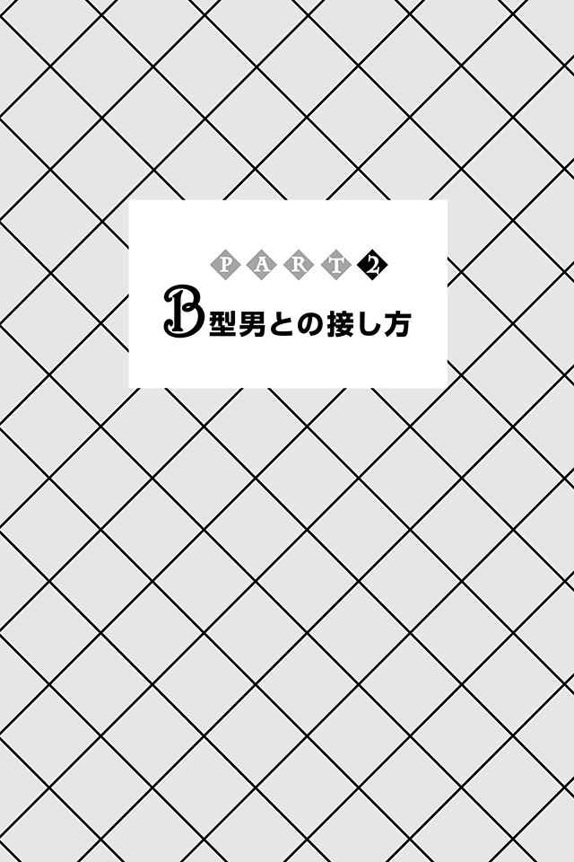

| Ｂ型男の取扱説明書(あさ出版電子書籍) | |
| 神田和花 & 新田哲嗣 | |
| (2012) | |
はじめに
本書を手に取った人の多くは、「Ｂ型男」の会話の前後の脈絡を無視した唐突なセリフやリアクションに戸惑った経験があることでしょう。
聞かれてもいないのにはっきりモノを言うデリカシーのなさに腹が立ったり、つい５分前まではノリノリだったはずなのに、急にそっけなくなる気分屋加減に振り回されたり......と、さんざんな目に遭い辟易している人も多い反面、Ｂ型男の裏表のない正直さに、少年のような清々しさを感じ、惹かれる女性も少なくない。
厄介なのに、なぜか惹きつけられてしまう存在、それがＢ型男です。
実のところＢ型男とうまくお付き合いすることができたとしても、必ずしもラブラブとはいきません。
なかには愛情を一身に浴びている幸せな女性もいるかもしれませんが、たいていのＢ型男は、自分の好きな女性、彼女と一緒にいても自分の空想の世界を優先するもの。
せっかく彼女、妻という座を射とめたにもかかわらず、
「いつになったらこのＢ型男は私のことを最優先にして考え、行動してくれるようになるのかしら？」
と期待してはがっかり......を繰り返し、悩んでいる女性がほとんどです。
彼女、妻ですらそんな状態ですから、家族、友達、同僚、上司など、周りの人はなおさらでしょう。
Ｂ型男とうまくやるうえで大事なのは、Ｂ型男をコントロールするのをキレイさっぱり諦めること。
「求めず受け入れる」だけの純粋な愛情をもって接すれば、必ずやＢ型男は、あなたを手放せない存在だと感じるようになるでしょう。
友情であっても家族愛であっても、信頼関係であっても同じ。純粋な思い、気持ちがカギとなります。
とはいっても、それだけですべてうまくいくわけではありません。
本書では、Ｂ型男とうまく付き合っていきたい、もっと彼を男として成長させたいと考える皆さんに、Ｂ型男との接し方が上手な人、つまり「Ｂ型男取扱マスター」になっていただくべく、Ｂ型男の取り扱い方を丹念にお教えいたします。
まずは、「Ｂ型男とはどんな存在か」を知っていただきます。
共感する部分もあれば、想像もしなかった一面もあるはずです。
続いて「Ｂ型男との接し方」についてお話しします。
即実践できるように具体的に説明していますので、明日からのヒントにしてください。
Ｂ型男についてある程度知ることができたら、次に「Ｂ型男取扱マスター」になるためのレッスンを施します。
Ｂ型男を扱う基本は、Ｂ型男に対する「忠誠心」を養うこと。そして、Ｂ型男に意思決定を仰ぎ、従い、黙って見守り、ついていくことです。
なお、以上のＰＡＲＴ１からＰＡＲＴ３までは神田和花が執筆担当いたしました。
すべてを読み終えたら巻末の「Ｂ型男取扱マスター検定試験」に挑戦してみてください。
実生活に即した設問になっていますので、あなたの実力を確認できる一方、とっさのときに対応できる実践力を身につけることができるでしょう。
この「Ｂ型男取扱マスター検定試験」は新田哲嗣が作成しています。
私たちは私たちなりに、Ｂ型男とＢ型男の伴 侶 として生きる女性をはじめ、Ｂ型男を支えるすべての人に対する敬意と愛情を込めて執筆いたしました。
こっそり読んでいただいたうえで、優秀な「Ｂ型男取扱マスター」となり、現場で生かしていただいても結構ですし、Ｂ型男と一緒に楽しく読んでいただいても結構です。
この本をきっかけに、多くのＢ型男とその周囲の人たちが幸せになってくれることを願ってやみません。
２０１２年12 月
神田和花
新田哲嗣
Ｂ型男はピュアで支離滅裂なのが面白い！
Ｂ型男は、知り合って間がなくても、フィーリングが合えばすぐに親しくなれるし、一緒にいて楽しい気分になる、とても魅力的な存在です。
物事を悪いほうには考えないし、ピュアでポジティブ。
ユーモアのセンスに溢 れ、刺激的でもありながら、気の良い性格でもあるので、「そうよね！」って同意すればするほど、どんどん機嫌が良くなり、ポンポン面白いことを言ってあなたを笑わせ、喜ばせてくれます。
ただし、利害関係を持ってしまうと、そうも言っていられません。
Ｂ型男は、論理的に物事を考えるのが苦手で、美意識とか、カッコつけとか、男としての自己実現とか、単なるワガママとしか思えないようなことを優先してしまう、マイペースな生き物でもあるからです。
女性の気持ちに配慮しないどころか、他人のペースに歩調を合わせることも、よほどのことがないと優先させません。
Ｂ型男の行動について、「なぜ、こんなことを？」と聞いてもムダです。
あなたを納得させる理由など、何一つ言えないはずです。
なぜなら、何も考えていなかったり、深く考えたうえでの行動ではなかったりすることがほとんどだからです。
受け答えも支離滅裂でしょう。でも、それでいいのです。
そんなＢ型男の性格や行動を改めさせようとしても、到底かなえることはできません。
ピュアで支離滅裂で周りには合わせない！
まさに一筋縄ではいかない、最強の存在。
だからＢ型男は最高にオモシロイのです。
Ｂ型男は「お殿様」である
私は日々、Ｂ型男を興味深く観察しています。なぜならＢ型男はピュアで、とてもかわいらしいから。そして、
常に「正直」で「純粋」で「不器用」で、裏表がなく、潔 く真っ直ぐ「自分の美学へ向かう道」を歩み続ける「古風な日本男児」、それがＢ型男の真の姿です。
とってもピュアなＢ型男ですが、それゆえにけっこう気難しい一面があり、その取り扱いに失敗すると大変なことになります。
特にＢ型男が良かれと思ってやったことを、否定してしまうと大変です。こちらに悪気がなくても、他意がなくても関係ありません。どんなに「そんなことないよ」などと説明しようとしても、聞く耳をもってくれません。それどころか、「俺を否定するなんてどういうことだ。もしかして、他の奴らとつるんでいるのか」と敵意を抱かれることも。
それはさながら、隣国の動きを常に警戒してピリピリしているお殿様（ここでいうお殿様とは、伊達政宗のような地方国を治める一国一城の主のこと）のようです。
メンツをつぶされるのが最も許せないというところもソックリ。場合によっては刀だって抜きかねません。
「お殿様だと？ もしかしてバカ殿だって言いたいのか？ 失敬じゃないか！」
とＢ型男に不審な目で見られそうですが、私は決してバカにしているわけではありません。
これは私個人の考えではありますが、男性の血液型別の性格分類は、時代劇に出てくる定番キャラクター、それも江戸時代の人気キャラに置き換えるとスッキリ当てはまるのです。
それぞれ紹介していきましょう。
Ａ型男は、几帳面でソツがなく従順に見えるタイプです。
毎朝早くから玄関先をホウキで掃くのが日課、愛 想 が良くて融通もきく、商家の雇われ番頭さん。
大 店 の娘さんのお婿さんとして逆玉の輿 に乗り、富と権力をダブルで手に入れるチャンスを狙っています。
Ｏ型男は、人の役に立ちたいと願う熱いハートをもったタイプです。
火事となったら自らの命を投げ打って、真冬でも頭から水をかぶり、燃え盛る炎の中に飛び込んで火災に巻き込まれた人を助けに行くことになんのためらいもない、正義の味方（でも、火事がないときは家でゴロゴロ......）、そんな「め組の火消し」に似ています。
ＡＢ型男は、愛と理想の実現のために生きているタイプです。
信じ、仕えている神様の教えを広めるために江戸の街へ来たものの、表立っては活動せず、街の様子を観察している、まさに宣教師。
ＡＢ型であることを隠して「隠れＡＢ型」として生活するのもお手の物。すべてＴＰＯによって使い分けています。
そしてＢ型男はというと、お殿様タイプです。
その特徴を列挙すると、こんな具合になります。
●礼儀作法ができていない人には、その場で怒鳴る
●怒ると途中でどうでもよくなって、「まあそういうことだから」と切り上げる
●言語明朗・意思明瞭
●変なところで常識人
●なぜか、無邪気に女性に対して上から目線
●女性は自分に対して服従してくれるものだと思い込んでいる
●男馴れしすぎていない女性でないと受け入れられない
●電車の中で化粧をするような女性は嫌い
●物作りが意外と好き。ストレス解消でもあるし、自分の思ったとおりになるのが嬉しい
●積極的な女性に言い寄られるのは苦手
●新幹線と富士山の組み合わせといった定番モノが嫌いじゃない
●男社会や縦社会といった組織が嫌いじゃない
●「やっぱり今日は出かけるのをやめた」がよくある
●決断力があって男らしい
●散歩とは、心象風景にフィットする情景を探して彷徨 い歩くこと
●審美眼とセンスがある
●ため息の数だけレッドブルの缶がある
●おセンチな気分のときは「男前な顔」になっている
●郷ひろみのジャケットプレイを鏡の前でひそかに練習している
●自分の部屋が最高。一人の時間が好き
●常に自分が主体（他人は脇役）の考え方をする
●恋愛とは ＝ 胸キュン ＋ フェティシズム ＋ 未練
●好きな女性には、ムードをつくって自分から告白する
●話合いでコンセンサスを形成するのは疲れる
●見た目が美しく整えられていると気分が良い
●「絶対的な愛情」を心の奥底で信じている
いかがですか？
なんとまあ、自分勝手でオメデタイ人なんだろうと思いませんでしたか？
周りの人々の支えが当たり前、気に入ったもの、人は大事にする、女性にはうるさく、常に自分が主役――。
でもこのオメデタさが、Ｂ型男の愛らしさのゆえんでもあります。
まさしく、一国一城の主、お殿様なのです。
Ｂ型男は意思決定が得意
Ｂ型男には決断力があります。
Ｂ型男が意思決定するときは一人です。誰のアドバイスもいりません。
残念ながら、たとえそれが二人のことであっても、お構いなしです。
それをさみしく思う気持ちもあるかもしれませんが、もしあなたが、何かを一緒に決めようとすると、二人にとって最悪の悲劇が起きるだけ。
あなたが状況判断をしたり、代わりに意思決定をしたりしようとすればするほど、正しい結論を導き出す可能性を著しく下げ、結論を導き出すタイミングに乗り遅れてしまうことになります。
Ｂ型男と話し合いで解決しようとするのは、そもそもナンセンス。
Ｂ型男は意思決定をするためだけ に存在する、といっても過言ではありません。
そのことをしっかり頭に入れておきましょう。あなたのことも、二人のことも、即断即決で意思決定してくれる頼りがいのある男なのですから。
ただし、周りのことについて考えないのがＢ型男。
結果、Ｂ型男の決定に周りの人があたふたすることも少なくありません。
周りのことを考えないから、結論を出すのが簡単なのです。
ただ一つ言えることは、もしあなたがＢ型男の彼女だとしたなら、きっと間違いなく、彼氏であるＢ型男は、あなたの笑顔を見たいと考え、そのための決定をしています。
決して、わざと困らせようとか、悩ませようとか、泣かせようとは思っていません。
あなたはそんなＢ型男を信じて、ついて行けばいいだけ。調整しなければならないことは、Ｂ型男に気づかれないよう、こっそり対応しましょう。
あなたに信じてもらえていることが、Ｂ型男の頑張りにつながり、結果、二人の幸せにつながるのです。
実は亭主関白でありたい
その昔、「関白宣言」という歌が流行 りました（さだまさし作詞・作曲・歌）。
Ｂ型男は、その歌に出てくるような亭主関白な生き方を夢見ています。
今ドキ亭主関白なんてと、時代錯誤でドメスティックでバカバカしい、国際社会では笑い者になるのがオチよ、なんて声が聞こえてきそうですが、Ｂ型男だってバカじゃありません。その現実はちゃんと理解しています。
亭主関白に振る舞っても、女性がそれに追従してくれなかったら最高にカッコ悪いことになるのも、十分わかっています。だから言わないのです。
ただしそれは、あなたに嫌われたくないからではなく、自分が傷つかないための「保身」。つまり、あなたの態度いかんでは、二人の心の距離が開いてしまうこともありえるということです。
あなたがＢ型男とうまくやっていきたいのであれば、「亭主関白」の女房役になってあげましょう。
なお、亭主関白の気分を味わわせてあげるだけで十分です。なおかつそれをギャグにして一緒に楽しんでください。
それだけで、Ｂ型男のコンプレックスを受け止めることができます。
そして、そんな女性をＢ型男は歓迎してやまないはずです。
「亭主関白を制する者、Ｂ型男を制す」
Ｂ型男と関係を築くうえで女性がもつべき基本姿勢ともいえるでしょう。
Ｂ型男は一点突破主義
朗 らかでチャーミングなＢ型男ですが、実は人見知りです。
根っからシャイなので、初めて会う人に対しては、緊張してしまうのです。
しかし、Ｂ型男とのコミュニケーションはとても簡単です。
あなた「Ｂ型男くん、出身はどちらなんですか？」
Ｂ型男「山口県です」
あなた「そうですか！ 山口県のどちらですか？」
Ｂ型男「萩市です」
あなた「それはそれは。萩市といえば高杉晋作の地元ですよね？」
Ｂ型男「そうなんですよ！ 僕、彼が好きなんですよね」
あなた「そうなんですか。魅力的ですよね」
Ｂ型男「そうそう、この話知ってます？ 実は～」
こんな社交辞令のような会話であっても、共通点が一つでも見つかりさえすれば一気に仲良くなれるのがＢ型男の底力。
さらに、Ｂ型男に関することについてそれとなく質問して、共通点を探してくれる人に悪い人はいない、と感謝する純粋な思考回路をもっています。
もしまだあまり仲の良くないＢ型男と話さなければならなくなった場合は、出身地や趣味、好きな食べ物など、無難な切り口でもよいので共通項を探してみましょう。
共通項がわかっているときは、さりげなくそのテーマについて話しかけてみるとよいでしょう。
もともとおしゃべり好きなので、そこから話が広がっていくはずです。
ただし、積極的な女性は苦手です。あくまでもさりげなく、を忘れずに。
Ｂ型男は一点豪華主義
「どうせ車に乗るならせめてローバーミニだよな」
「万年筆はやっぱりモンブランでしょう」
「タンだけは特上でなきゃ」
Ｂ型男と会話をしていると、要所要所でこうしたセリフが飛び出してきます。
元来ケチなＢ型男は、常にコストを抑えることを優先するのですが、なぜか時折、いいものに細かなこだわりをもちます。
普通のカルビでいい、普通のロースでいい、普通のレバーでいい、だけどタンだけは特上でなきゃ。特上が売り切れなら食べなくたっていい――。
あなたをはじめ、周りの人がポカーンとする中、Ｂ型男は満足気。
だって、上タンはあるのに頼まない、カルビは上を頼まない、そのこだわりっぷりはまったくわかりません。
でもだからといって、そこを突っ込んではいけません。ましてや、くだらないなんて思ってはいけません。
「タンだけは特上でなきゃ」
と、Ｂ型男が言い出したときは「おいしいタンを私に食べさせたいと思ってくれたのね」と、喜べばＯＫ。
そのこだわりをちょっとでもからかったら、彼のプライドが傷つきます。そして、Ｂ型男は一度でも自分のプライドを傷つけた相手を許すことはありません。
Ｂ型男の一点豪華主義に対峙したときは「私とおしゃれな車でデートしたいと思ってくれているのね」と、微笑めばいいのです。「すてきな万年筆で私に手紙を書いてくれるつもりなのね」と、楽しみにしていればいいのです。
もともとケチなＢ型男。よほどのことがない限り、あなたに迷惑をかけるようなことはありませんから。
Ｂ型男は天然愛されキャラ
ある日、公園でＡ型男とＯ型男が熱心に漫才の練習をしていました。
ちょっと離れたところで、二人の姿をＡＢ型男が黙って見ていました。
そこに、Ｂ型男が通りかかりました。
Ｂ型男「俺も仲間に入れてくれ！」
Ａ型男「入れてあげたいけどムリ。僕が考えた漫才のネタはすべて二人用だし、台本どおり粛々 とやってくれるＯ型男くんがいいんだ」
するとＢ型男は、Ａ型男の話が聞こえなかったのか、なんの反応もせず二人の前を通り過ぎたかと思うと、突然踵 を返してＡ型男にラリアットをきめてきたのです。
Ａ型男「痛いな。もう！ ......でも、これは使えるかも」
そう、Ｂ型男のハチャメチャな行動によって、コンビ漫才はトリオコントに生まれ変わってしまったのです。
前後の流れを無視しているだけでなく、脈絡なく全身でぶつかってくるＢ型男の行動は、見ている人の期待を裏切ることになり、コントとして面白くなるばかりか、ネタを書いていたＡ型男の想定をはるかに超えるクオリティ――。
Ａ型男は前言撤回し、すぐにＢ型男を仲間に加えることにしたのでした。
その様子を見ていたＡＢ型男、自分も仲間に入れてもらいたくなりました。ただ、「俺も仲間に入れてくれ」と言ってはっきり断られるのは嫌だったので、何気なくを装って三人に合流。
皆もそれを受け入れ、結局四人でコントづくりをすることになりました。
しかし、その関係は長く続きませんでした。
ある日のこと、突然「辞める」とＢ型男が言い出したのです。
Ａ型男「なぜだ？ 何もかもうまくいっていたじゃないか！」
Ｏ型男「Ａ型男くんの言うとおりだよ、俺たち仲間だろ？」
ＡＢ型男「諦めないで一緒に頑張っていこうぜ！」
Ｂ型男「俺は脱退するって決めたんだ」
Ａ型男「いったい何が不満なんだ！ 勝手なことばっかり言いやがって」
すると、ちょっぴりうつむいてＢ型男がひと言。
「顔......」
Ａ型男とＯ型男は目を見合わせ、ＡＢ型男はみんなが聞こえるほどの深いため息をついてその場を立ち去ってしまいました。残った二人が説得を試みたものの、Ｂ型男は聞く耳をもたず、結局それっきりグループに戻ってくることはありませんでした。
半年後、都会へ出てイケメンとコンビを組んだＢ型男が、テレビ、雑誌にちょくちょく出るようになってきました。
Ｏ型男「Ｂ型男くんは凄いな！ 俺たちと組んでいたときとは違うよな」
Ａ型男「応援しよう。俺たちにはついていけなかったんだ」
ＡＢ型男「たしかに......（仲間っていいな！）」
なんてことでしょう。
気が向いたからという理由で勝手に入ってきて、皆をひっかきまわしたあげく、自分の都合で突然去って行ったＢ型男を残されたメンバーが応援しているのです。
好き勝手やっても、結局、認められて愛される。それがＢ型男です。
さらに、悪気があるわけでも、誰かをダマすわけでもないので、人から憎まれることも、自ら反省することもなく、一生、天然愛されキャラとして君臨し続けます。
だったら、すべてを受け入れて一緒に楽しんだほうがお得です。振り回されるたびにイライラしていたら、疲れるだけ。
必要とされたときは一緒についていき、「もう来るな」と言われたら送り出す、そんな関係を築くことがポイントです。
Ｂ型男とのデートは胸キュンでいっぱい
Ｂ型男は独自の世界をもっています。
最たるものが恋愛（男女）関係のあり方です。
まず、Ｂ型男にとってデートとは、女性との関係を深める場ではありません。
ひと言で言ってしまうと、胸キュンの思い出をつくる時間。
それも女性と二人での思い出をつくるのではなく、自分にとって「グッとくる胸キュンシーン」の制作活動です。
驚くかもしれませんが、これがＢ型男ならではの女性の愛し方なのです。
Ｂ型男には、夢見がちな少女のようなところがあり、純愛にあこがれています。なので、
デートは胸キュンであればあるほど〝いいデート〟だと考えます。
自分がこれまでに経験した胸キュンシーンを繰り出すことによって、女性が自分にメロメロになると信じているのです。
たとえば、長い長い坂道を女性と二人乗りの自転車で下っていく、まさに王道の青春胸キュンシーンをしてはどうかとひらめいたとします。
せっかくの胸キュンシーンですから、美しくなければなりません。したがって、自転車、そして出演者となる自分と女性を、完璧に準備します。
そして、二人乗りの自転車が坂道を下っていくその情景を、遠巻きに引いたカメラワークでどう見えるかを考えながら実践。さらに、その胸キュンシーンをまるでショートムービーのように自分の心の中に記憶します。
もちろん、これで終わりではありません。
記憶した画像を編集し、爽 やかな音楽を流し、ドキドキハラハラなセリフを字幕で挿入して完成です。
なぜそんなことをするのか？ 理由は一つです。
死ぬときに「オリジナル胸キュン動画」を視聴する予定だからです。
当然、この極秘プロジェクトは相手の女性に伝えられることはありません。
女性からすると、坂道を下るシーンの撮影も、突然自転車をもってきたＢ型男にせかされるまま坂を上らされたと思ったら、下りるだけ。まったく意味がわかりません。
日々、そんなことが繰り返しされた結果、
「Ｂ型男くんと一緒にいても何をやっているのか私にはちっともわからない......。
もう、Ｂ型男くんとは付き合えないわ」
と、迷い、別れを決意する女性は少なくありません。
Ｂ型男からすれば、別れを寂しく思う一方で、一所懸命胸キュンを演出したつもりだったけれど、まだ足りなかったようだという判断になり、さらに励みます。ちっとも懲りていないというわけです。
でもこれがＢ型男の最大の魅力。女性からすると間違った努力かもしれませんが、その一所懸命さもひっくるめて受け入れてあげてくださいね。
今はＢ型男独自の世界が強くても、いつの日か、あなたの「存在」に気づき、あなたとだからこそのデートについて考えてくれるようになります。
そのときまで隣に寄り添いましょう。
Ｂ型男は外見重視
Ｂ型男は様式主義者。
目からの情報で様々なことを判断します。
女性に対しても同じく外見で判断します。それはなにも美人か不美人かといったことではありません。
心の動きや体の状態、それこそ自分に対する愛情までも、すべて女性の外見、色や形、様子から読み取るのです。
厄介なのが、読み取った情報、そして判断内容をその本人に確認しないこと。
「そんなつもりじゃなかったのに......」と、周りが気づいたときにはすでに遅し、なんてこともザラです。
たとえば、付き合い始めの頃は彼氏好みの格好をし、付き合いが長くなるにつれ、自分がもともと好きだったりラクな格好にシフトしていく女性は多いですよね。でも、Ｂ型男と付き合うときはやめたほうがいいでしょう。
男の意地もあるので無様なことは口にはしませんが、自分の彼女がファッションを変えたことに気づいたＢ型男は、往々にしてこんなふうに考えます。
「新しい彼氏ができて、その男好みの女になったんだな。
もう俺（Ｂ型男）のことを好きだった彼女はいない。
今、目の前にいるのは違う女性だ。だったら終わりにしよう――」
大好きだった彼女との別れ。純愛を求めるＢ型男にとってもちろんつらいことです。けれど、仕方のないこと。これ以上、傷つきたくない。だから、諦めがつくのです。
服装を変えただけでと思うかもしれませんが、これがＢ型男です。
こうした心の作業は秘密裏に進められるため、表面に出て来たときにはＢ型男の決意は固まっていて、覆 すことができません。女性としては、ただただ驚くばかりですが、笑いごとでは済まないので要注意です。
女性の外見自体には興味はないものの、その変化具合はしっかり見ているのがＢ型男。余計な不安を抱かせないように、外見には気を配ってあげましょう。そのほうがこちらも面倒が起きず、ラクチンです。
実は、Ｂ型男のこの性質を踏まえて、こちらの気持ちを悟らせることもできます。
たとえば、Ｂ型男の態度や言動によってあなたがひどく傷つけられたなど、Ｂ型男に気づいてほしい、理解してもらいたいことがあるときは、次の方法がうってつけです。
●眼帯をする
●包帯を巻く
●大きな絆創膏を目立つように貼る など
何か不調が起きたとわかりやすく伝わるような仕掛けをするのです。もちろん、やりすぎは厳禁。人として問題ありと見なされてしまいますから（実際ケガしている人に対しても失礼）。
そうすると、Ｂ型男は、あなたが傷ついたことに気がつきます。
他人のことにあまり興味のないＢ型男ですが、感受性は豊かなので、「痛そう」なものに気づくのは大得意。
なのでケガ、それこそ深ヅメ程度であっても反応します。さらに輪をかけて女性が落ち込んでいたり、静かだったりすると、申し訳ないような気持ちになります。
とはいっても、お殿様であるだけに、
女性に対して自分から謝るなんてことはできません。
なので、直接ではないですが、ちょっとした気遣いや心遣いをしてくるようになります。そうしたら、反省したのだなと気づいてあげてください。そして、バカにしたりせず、彼の気持ちを汲み、受け入れてあげましょう。
ちなみに、どんなに激しいケンカをしたとしても、決して感情に任せてＢ型男の人格にダメ出しすることはしないでください。
お殿様タイプだからこそ、女性にしてやられるのが何よりも大嫌いです。
もし仲直りできたとしても、Ｂ型男の記憶の中には、その事実がずっと残り続けます。
ケンカはあくまで起きたことに対してのみ注意すること。でないと、あなたの評価を下げることになってしまいます。
＊＊＊
さて、Ｂ型男の性質、いかがでしたか？
好き勝手やっても、結局認められて、愛されるのがＢ型男。まずは、そのことを受け入れましょう。
続くＰＡＲＴ２では、より具体的にＢ型男との接し方についてお話ししていきます。

一般常識が大前提
お互いを決して傷つけることのないよう配慮したやりとり。
建前ばかりが美しく、本音がさっぱり読み取れない、大人の会話。
男女の駆け引きならではのルールとマナー。
Ｂ型男もその中で、一般的な常識にのっとって会話を楽しんでいるつもりですが、なにぶん屈折したコミュニケーションとは無縁。
もしその様子が、傍 若 無 人 で自分勝手なお天気屋さんに見えるのであれば、それはあなたが大人ならではのやりとりに馴れてしまっているからにほかなりません。
会話も面白いし、頭もいいし、いつも楽しませてくれるからと、Ｂ型男を今風のデキる男性だと思っているなら、それは大間違い。
Ｂ型男は根っから正直で、本音と建前を使い分けることができない（一所懸命使い分けようとしても、結局隠しきれずに本音・本心がミエミエだったりする）大変不器用な生き物です。
「ターゲットとなる女性の年齢が知りたい」。でも、「女性の年齢を聞くのはタブー」。であれば「女性の干支を聞こう」と考える、そして実際に聞いてしまう。それも、さりげなさを装って、結局さりげなくない（だから、周りからすると「ええっ」て感じなのですが）、そんなレベルです。
こんなＢ型男を正しく理解するためのポイントは、Ｂ型男の発言と行動をありのままストレートに受け取ることです。
「ま、Ｂ型男がそう言っているならきっとそうなのだろう」
と大らかに受け入れて従う、従順な精神が求められます。
あなた自身がＢ型男に従うしか、Ｂ型男との関係は始まりません。
すでにお話ししたようにＢ型男は「お殿様」。
ただし、常に誰に対してもお殿様キャラ全開で接することはしません。
人見知りなうえに、女性に対する妄想ともいえる憧れが強いため、女性の前ではひたすら隠します。
あなたに見せてようが見せてなかろうが、根が古風で古典的なので、人に対して最低限の礼儀とマナーを求めます。
最低限の礼儀とマナーとは、人を敬い大切に扱うこと、そして、年齢、立場に応じた対応をすること、家長となる男性に敬意を表すこと。当然のことながら電車の中で化粧をする女性なんて論外です。
Ｂ型男には、くれぐれも常識をもって接すること。
それが何をおいても基本になります。そのことを忘れずに。
従順な精神と辛抱強さが必要
Ｂ型男をコントロールしようとしてはいけません。
ましてや自分の理想とする男性像、彼氏像、夫像、部下像、上司像などに仕立て上げようとしてもムダです。これは、鉄則です。
Ｂ型男は何かを自分にさせようとしていると察知した瞬間、あなたの元を離れていきます。心が離れていく速度は神業ともいえるほど速く、そして一度離れた心が返ってくるのはかなり難しいでしょう。
つまり、それだけは絶対にやってはいけないということです。
それがたとえ、Ｂ型男のためだったとしても、です。
Ｂ型男とうまく付き合うには、Ｂ型男の決断をまずは従順に受け入れること。
そして、焦らないこと。この二つに尽きます。
Ｂ型男はいたって自己中心的。あなたの都合、タイミングに合わせてくれることなどほぼなく、ときにはあなたの存在を忘れたかのように振る舞うこともありえます。
悲しくなったり、怒りを覚えたりすることもしばしばあるかもしれません。
でも、耐えてください。辛抱してください。
忘れてはいけません。相手は、お殿様。
お殿様にクレームを入れるなんて言語道断です。
やんごとなきお殿様との上手な付き合い方は、上手におだてて、あなたの都合がいいときだけ相 槌 を打って「いいね！」をするのみ。
ほったらかしにするのではなく、見ていてあげながらも関わりすぎない。そうすることで、あなた自身もラクになります。
Ｂ型男は自分を立てて、従ってくれる女性を好みます。
ここでいう「従う」とは、人間としての上下ではなく、様式、秩序、役割のうえでの意味です。Ｂ型男は、主従関係なくして信頼関係は築けないと考えるからです。
そんなＢ型男と親密で素晴らしい関係をつくるには、「謙譲の美徳（美徳としての遠慮）」をもってまずは（道を）譲ることが必要です。
とにかく広い心で、細かいことを気にせず、時間を遡 って確認することなく、また先のことも計画を立てず、Ｂ型男のタイミングに任せてしまいましょう。
あなたがＢ型男を上手におだてて、様子を見ながら「いいね！」と反応だけしていれば、必ずやこう思うはずです。
「この女性はなんか違う。精神的にゆとりがあるというか。きっと、自分に自信があるんだろうな。俺のことをよくわかってくれている気がする。こんなふうに男のメンツを立ててくれるやさしい女性なら、結婚しても、俺の両親の言うこともきちんと従ってくれるはず。こんなに俺の立場を慮 ってくれる女性がいるんだな」
それだけ従順な精神を発揮できたあなたは「Ｂ型男取扱マスター」として、Ｂ型男と主従関係にのっとった関係を築いていくことができるでしょう。
笑顔で同意するだけでいい
Ｂ型男が疲れているときは、何も言わず、ただ笑顔でそっと見守りましょう。
「俺はこんなにも疲れているのだ」とＢ型男のほうから話し始めたら、熱心に聞いて同意してください。「私だって......」は厳禁。聞くことに徹します。
Ｂ型男が悩んでいるときも、笑顔でそっと見守りましょう。
Ｂ型男から相談してきたら、最初から最後までじっくり聞いて同意してあげれば自分で結論を出してきます。その結論に対しても笑顔で同意するだけでとどめましょう。
男性が悩んだり相談したりしてくると、頼ってくれた嬉しさから、なくてはならないパートナーだと思ってもらえるよう、頑張ってしまう女性は少なくありませんが、実は大間違い。
相談しておきながら、女性から積極的にからんでこられると、とたんに「面倒」と思うのがＢ型男。手伝いたい気持ちはぐっと抑えるのが賢明です。
Ｂ型男は余計なことを言わずに、大きな包容力で受け止めてくれる女性に惹かれるからです。
直接的に相談してこなかったとしても、フェイスブックやツイッターなどのＳＮＳの書き込みに「いいね！」だけ押す。相槌など同意していることをアピールすればそれがベストです。
頑張っているＢ型男に「いいね！」
悩んでいるＢ型男に「いいね！」
疲れているＢ型男に「いいね！」
何を言っても、笑顔で「いいね！」と同意して、優しく受け止めてくれることがＢ型男にとって一番安心できる嬉しいこと。近すぎず遠すぎない距離を保ってください。
胸キュンには胸キュンで返す
Ｂ型男は想像力が豊か。元来ピュアな日本男児なので、やや夢見がちな部分があります。
普段は、自分一人で楽しんでいるのでいいのですが、気になる女性が現れると、一気にボルテージが上がってしまい、面倒な存在になってしまいます。
お得意の質問がコレ。
「オススメの胸キュン作品、映画とかドラマとかマンガを教えてよ！
少女マンガでも構わないからさ！」
ウザイですよね。
とりあえず笑って、ほかの人の話に混ぜてもらおうと背を向けたあなた。しかし、Ｂ型男は逃がしません。あなたの肩に手を置いて引きとめます。仕方なく振り向いたあなたのほっぺたに突き刺さるＢ型男の人差し指......。
なんてウザイんでしょう！
実はこの、振り向いたらほっぺたに人差し指がちょこん......は、Ｂ型男の得意技です。
これだけではありません。体を使って表現することにかけてＢ型男は天才的。ボディランゲージのデパートといっても過言ではありません。
「胸キュン」というテーマに対するＢ型男の執着は異常です。
特に、気になる女子の胸キュン作品リサーチには命を懸けてきます。
ハッキリ言って、逃げるのはムリ。観念して、質問に答えてしまうのが、最も早く解放される方法であることは間違いありません。
とはいえ、そんなすぐ簡単に胸キュン作品なんて出て来るものでもありませんよね。
そんなときは、このように答えましょう。
あなた「いっぱいあるけど、私は本当の恋にキュンキュンしたいな」
Ｂ型男「なんて女子力が高いんだ！ オレもこんな女と胸キュンしたいぜ！」
お目当てのあなたが胸キュンに答えてくれたことで、Ｂ型男は大興奮。胸キュンモードのＢ型男は妄想力の塊。あなたといつか本当の恋をして二人で胸キュンの思い出を紡いでいくことを想像し、自分の世界へと入ってしまうでしょう。
こうなったらしめたもの。Ｂ型男が世界に入り込んでいるその隙にほかの人たちの会話に混ざってしまいましょう。それで逃げ切れるはずです。
くれぐれもＢ型男の胸キュン話を否定しないこと。
Ｂ型男にとって胸キュン話は青春の一部。それを否定するなんて斬り捨てられてもしかるべき大罪です。
かわいらしく胸キュン話をしていても、真の姿はお殿様なのですから。
Ｂ型男に誘われたときの断り方
Ｂ型男はプライドが高く、自分の体面を重んじる古風なところがあります。そのため、断り方を間違えると、関係が拗 れてしまうことが多々あります。
なので、面と向かってはっきり断るのはＮＧ。
お誘いに気が向かないときは、しとやかな京女のように目を細めてにっこり笑顔で、
「考えておくわ」
と答えましょう。そして、しばらくほったらかしでＯＫです。
Ｂ型男は社交家なので、日頃から数々誘ったり誘われたりしているので、八割の確率であなたを誘ったこと自体を忘れてしまうからです。返事を遅らせてさえいれば、あなたは自然とランキング圏内から外れていき、お互い気まずい思いをしなくて済むというわけです。
しばらくして再度、Ｂ型男から誘われたときは、
「考えておくって言ったでしょう！」とちょっと強めに応えましょう。
そうすると、ほぼ間違いなく誘ったことすら忘れていたＢ型男は、
「あれ？ オレ、○○ちゃんを前も誘ったことあったんだっけ？ 何に誘ったっけ？」
と、うまくごまかしながら、返事を強く求めることはしてこないので、こちらもラクにいられます。
もしこれで退散せず、さらに誘ってきたときは、誰にも聞こえないほど小さな声で、
「私、困るわ」
と、ひと言伝えれば、意外とあっさり引いてくれます。
男女の駆け引きが苦手なので、言葉のまま受け止めるのです。
小さな声で言うことで、お殿様のメンツを潰さずに済むため、Ｂ型男も引きやすいというわけです（そして、Ｂ型男の性格上、断られたこと自体、さっさと忘れてしまうでしょう）。
Ｂ型男に気持ちを伝えるには
Ｂ型というだけで合コン、飲み会など、出会いの場では不人気になりがちのＢ型男（顔がカッコよければ別）。それは、古今東西のテッパンコースです。だから、Ｂ型男の心臓は、そんなことではへこたれません。
むしろ、チャンスだと考えます。マイナスからのスタートは上がるしかないからです。
実際、Ｂ型男と仲良くなる女性のほとんどが、「最初は苦手だった」と言います。
「苦手だったんだけど、意外といい人だなって思うようになってきて、そして......♥」
「私、今だから言うけど、初めて会ったとき、Ｂ型男くんのことが苦手だったの！」
なんてコメントが出たら、すぐにあなたをロックオン。ターゲットに認定します。
Ｂ型男は、執着心が強いので、狙った獲物は絶対に落としたいタイプ。
先程お話しした胸キュントークのときと同じく、逃がしません。
もしあなたがＢ型男と付き合いたいのであれば、狙っているＢ型男の近くで、「実は、私、最初、Ｂ型男くんのことが苦手だったの！」と周りの皆にも聞こえるように言うのが効果的です。釣りでいう撒き餌にするのです。
ここで引っかかってきたら、盛り上がるトークで、時折胸キュン作品の話も入れて、ぐいぐい引き寄せてしまいましょう。
ただし、ぐいぐい押していくのはＮＧ。
Ｂ型男は積極的でやり手の肉食女子が苦手なので、一瞬でも、アレっと思ったら急激に引いてしまいます。
あなたがすべきなのは、Ｂ型男と楽しい時間を過ごすこと。そして、さりげなく「誘ってもらえたらうれしいナ」と、気持ちだけを周りの人に聞こえないほどの小さな声で伝えて連絡先を交換、以上。
あとはＢ型男から「苦しゅうない。近う寄れ」と許可が出るのを待ちましょう。
Ｂ型男を振り向かせるには
Ｂ型男には、よくある恋愛ハウツーは一切通用しません。
唯一、的を射ているのが、
「追うと逃げる」
ただし、よく言われる「男は引くと追ってくる」はＢ型男には効きません。
他人に影響を及ぼすのは楽しいクセに、他人に影響を及ぼされるのは大嫌い。
つまり、引いても追ってこない、追ったらさらに逃げてしまうという、なんとも厄介な生き物なのです。
では、いったいどうしたらＢ型男を振り向かせることができるのでしょうか？
まずは、好きなＢ型男を追いかけないこと。
恋愛を成就させるためには、「待つ」ことが必要です。
まずはじっくりとＢ型男から話しかけてくるのを待ちましょう。さりげなく近くに座る、話に加わるなど、話しかけやすい環境をつくって、あとは待つのみ。
Ｂ型男があなたに世間話をしてきたり、冗談を言ってきたりしたら、それに応じて、楽しい会話を繰り広げることに終始する。これでＯＫです。
Ｂ型男を諸事万端、タイミングを合わせて歓迎し、とっておきの笑顔で受け入れることで、あなたの熱い胸の内をＢ型男に伝えることができます。
先にもお話ししましたが、Ｂ型男は積極的な女性が苦手です。
女性のほうからＢ型男を呼び出したり、
Ｂ型男と会う場所を指示したり、
待ち合わせの時間を指定したりと、
Ｂ型男に先んじて計画し、物事を仕掛ける女性を避けます。
最初のうちは、Ｂ型男からのお呼びがあったときはあなたのほうから出向き、お声がかからなければ、Ｂ型男からの連絡をひたすら待つ。これが、Ｂ型男の本命となる唯一の方法です。
なぜなら、Ｂ型男が大好きなのは、男を誘惑することなどしない清純なヒロイン（女性）だからです。
まさに、お城に住んでいるお殿様と、城下町に住んでいる町娘との関係といってもいいでしょう。
Ｂ型男があなたに何も言ってこない場合、Ｂ型男が去ってしまった場合は、縁がなかったものと考えて、次の恋に進みましょう。
しつこく追いかければ追いかけるほどうまくいかなくなります。ご注意を！
「もっと贅沢しようよ！」は言ってはいけない
Ｂ型の男はいざというときのために質素倹約・質実剛健を心がけていて、お金に関しては極めて現実派です。
ムダな贅沢をしないこと（ケチ）については美徳と信念をもっています。
しかし一方で、「様式的に美しいモノ」が大好きなＢ型男は、カタチある美しい（自分が魅力を感じる）モノを衝動買いします。
つまり、お金を計画的に使うことができないのです。結婚資金など、目的があって貯めていたはずのお金も、気づけば使ってしまっていたなんてこともしばしば。
だからこそ、自分が魅力を感じないモノに対してはシビアというわけです。
なので、お金を使わないからといって、Ｂ型男にケチをつけてはいけません。
いちばんの禁句が「たまには贅 沢 しようよ！」
多くの女性が勘違いして失敗しているのですが、Ｂ型男にとって、外食そのものがすでに贅沢なのです。
ファミリーレストランだってＢ型男にとっては十分に贅沢。
Ｂ型男はファミリーレストランの日替わりランチでも十分に体裁が整い、お腹も満足することを知っています。
さらに呼び鈴を鳴らさないとスタッフが来ないところが、たまらなくお殿様Ｂ型男の心の琴 線 に触れます。呼んだらウエイトレスが来てくれ、呼んでいないときは出て来ないなんて江戸時代のお城の中のルールと同じですからね。全国どこのチェーン店に行ってもまるで自分のお城に帰ってきたようなマニュアル空間に安心できます。
もちろん、せっかくのデート、おいしいものを食べたい気持ちもわかります。
でもどんな理由があれ、「たまにはもっと贅沢しようよ！」は絶対に禁句。あなたのほうからは言い出さないほうが無難です。
Ｂ型男とは一緒にいる時間を楽しむことに執心し、高価なお店やお料理はほかのお友達と楽しむなど、あなたのほうでバランスを取る。それがあなたにとっても気がラクです。誕生日やクリスマスなどでの、Ｂ型男のサプライズを期待して献身的に待ちましょう！
＊＊＊
さて、Ｂ型男への接し方、いかがでしたか？
これまでいったいどうすればいいの？ と迷ったり失敗していたシチュエーションもあったのではないでしょうか？ ぜひ、今後はどんどんご活用くださいね。
続くＰＡＲＴ３では、Ｂ型男とうまく付き合えるようになる方法（「Ｂ型男取扱マスター」になるレッスン）についてお話ししていきます。
立派なＢ型男取扱マスターになるには
ＰＡＲＴ１で、「Ｂ型男はお殿様である」とお話ししました。
では、このお殿様Ｂ型男を上手に取り扱うには、つまり、立派なＢ型男取扱マスターになるには、どうすればいいのでしょう。
Ｂ型男とうまく付き合うには、あなたがＢ型男にとって「自分を上手にもり立ててくれる女性」であり、「あなたなしでは男として立つ瀬がない」と認識してもらうための主従関係を構築することが欠かせません。
主従関係というと、時代錯誤に聞こえるかもしれませんが、あなたがお殿様Ｂ型男に従うという忠誠心をもつことによって、二人の間に「信頼関係」が築けます。
これはあくまでＢ型男が自由自在にイニシアチブを取り、即断即決してあなたとの関係を発展させていくためのものだと理解してください。
言い換えると、「Ｂ型男をもり立てて生きること」。
これが、Ｂ型男と幸福な関係をつくる唯一の方法です。
通常、男女であれば、恋愛感情こそが二人の強い絆を紡ぐと考えられるのですが、Ｂ型男に関しては「忠誠心」に勝るものはありません。
お互いに惹かれ合うのとは、カラクリがちょっと違うのです。
時代劇ドラマや映画だと、素行の悪い「お殿様」が多いので参考になりませんが、そもそも一国一城の主である「お殿様」は家を守り、国を守り、栄えさせるために日々考え、動きます。
お殿様Ｂ型男も同じ。
個性的な部分がままあれど、家を守り、家を栄えさせるために、働き、心を砕き、務めています。
日本古来から伝わる亭主関白というシステムは、「お殿様」が気持ちよく、そして効果的に働くためのものでした。だから、家や国が発展してきたのです。もし古来からずっとカカア天下だったとしたら、違う日本になっていたことでしょう。
つまり、あなたに忠誠心がなかったとしたら、Ｂ型男はやる気がそがれ、頑張りも効かず、発展は見込めないということ。
発展性に乏しい男性と一緒になるなんて、誰も幸せになれないですよね。
そうならないためにも、Ｂ型男とうまく付き合う方法を習得していただきたい。
Ｂ型男に対してイニシアチブを取ろうとしては失敗を繰り返し、振り回される立場から、Ｂ型男を上手にもり立てることで、Ｂ型男の胸の中にしまっているモチベーションを引き出し、どんどん調子にノセて発展させていく立場、「Ｂ型男取扱マスター」にあなた自身が成長していくことが求められているのです。
モチベーションを最大限に引き出すためには、どんなプロセスでＢ型男にアプローチしていけばいいのか――。その具体的な方法をＢ型男取扱マスターになるためのレッスンとして、ＰＡＲＴ３では紹介していきます。
Ｌｅｓｓｏｎ01 忠誠心をもって接する
Ｂ型男取扱マスターになるには「忠誠心」が必要です。
【忠誠】（大辞泉）
忠実で正直な心。忠義を尽くすこと
「忠誠心」という言葉を、久しぶりに目にした人も多いでしょう。最近すっかり死語になってしまいましたから。
ですが、振り返ってみると、永い間、日本における教育は「忠誠心」を養うことでした。読み書き・そろばん・忠誠心こそが、日本人の教育の基礎だったのです。
なかでも忠誠心は、天皇を護衛する武士を育てるための教育として日本で育まれてきたもの。それが、江戸時代に儒教の影響を受け、明治時代以降は軍国主義の基礎として学び継がれてきたのです。
「忠誠心」が教育から消え去ってしまった現代においても、男ならではの組織を大事にし、礼儀を重んじるＢ型男は「忠義心は人間関係において欠かせないものである」と、考えています。
それゆえに、女性は「この人」と決めた男性に対して忠誠を誓うものだと信じて疑いません。さらには女性たる者、生まれながらに「loyalty（ロイヤリティ）」があるはずだと、多分な期待を抱いています。
忠誠心がないとＢ型男との関係が成り立たないのもそのせいです。
【loyalty】（プログレッシブ英和中辞典）
誠実 忠実 忠義 忠誠 愛国 献身的な感情
忠誠心にloyalty ――。
随分とご都合主義、そして時代錯誤な感も否めませんが、Ｂ型男の女性に対する支離滅裂な態度、変に偏りのある考え方を整理すると、この二つの言葉に尽きるのです。
実際、Ｂ型男は女性に対しても相当なこだわりを持っています。
無条件で献身的な愛情を示し、まごころをもって仕えてくれることを「女性としてあるべき理想の姿」だと考え、さらにそれが実践できることを隣にいるべき（と認めている）女性に、当然のこととして求めます。
もちろん、そんなことは公言しません。夢見る夢子ちゃんならぬ夢見る夢男みたいだと思われるのが恥ずかしいからです。元来シャイなＢ型男からすると当然でしょう。
でも、本心はこうなのです。
シャイなＢ型男の気持ちを理解し、忠誠心をもって接する。
それが、Ｂ型男取扱マスターの基本姿勢です。しっかり覚えておきましょう。
それは等しく、Ｂ型男取扱マスター研修生であるあなたが、美しい日本人女性（男性）として、磨き上げられることでもあるのです。
Ｌｅｓｓｏｎ02 ヘソ曲がりとして育てる
ＰＡＲＴ１で、もともとＢ型男は古風な日本男児だとお話ししました。しかし、素直で正直なだけの男が、現代のような世知がらい世の中で通用するかというと、難しいといわざるをえないでしょう。
だからこそ、Ｂ型男にとって、Ｂ型男が隠しもっているモチベーションを最大限引き出すことのできる、優秀なＢ型男取扱マスターの存在が必要なのです。
Ｂ型男を一人前にするために取扱マスターとなるべきあなたは、心を鬼にして、こう言わなければなりません。
「Ｂ型男さん もっとヘソ曲がりになってちょうだい」
「痛いときには痛くないと言って、泣きたいときには笑って、暑かったら寒いと言って、寒かったら暑いと言うの。とっても不自然なことだけど、思ったことと逆のことを言葉にすると、そういう風に感じるものなの。それに私、天才バカボンのパパみたいに逆のことを言って笑わせてくれる男性が大好き」
Ｂ型男取扱マスターとしてあなたがそう言えば、元来素直なＢ型男は「たかがこんなことで喜んでくれるならお安い御用だ」と、あなたのために、それこそ冗談ぽく本音の逆を言うようになるでしょう。
それがたとえどんなに面白くなくても、あなたは大いに喜び、楽しんであげましょう。
Ｂ型男は「大好き」「面白い」と言われるのがそれこそ大好き。喜んであげた分だけ、成長します。
こうしたあなたの指導によって、素直で正直なだけの男が軽々しく本音をこぼさなくなり、世間の荒波に対抗できるようになります。
ただこれだけではまだまだ発展させる力はありません。Ｂ型男取扱マスターとして、もう一段、Ｂ型男の力をアップさせる必要があります。
あなたが言うべきセリフは次のとおりです。
「どの程度ヘソが曲がっているのかわからないのが本当のヘソ曲がりよ。
いつも逆のことを言っているだけだってわかってしまったら、話を聞いていてもちっとも面白くないでしょ？」
逆のことを言いなさいと教えたその口で、まさかのダメ出し。それも言われたことを素直に、従順に、あなたのためにやっているのに――。
気の優しい「Ｂ型男取扱マスター」研修生であるあなたには、つらいことかもしれません。
それでも、心を鬼にして言ってください。
それが、Ｂ型男のためにもなるからです。
すでにお話ししたように、Ｂ型男は調子に乗りやすい一面があるので、逆のことを言えるようになると、「俺って面白いだろ」などと勘違いしかねません。その結果、ひたすらただ逆のことだけを言い続け、周りから飽きられてしまい、頑張ったはずのＢ型男自身がつらくなってしまう......。それを避けるためにも、釘をさすべきだというわけです。
そうすることで、Ｂ型男は言葉の力と怖さを知り、そして自分の守り方をも習得します。
あなたの指導によって世知がらい世の中で戦う術 を覚えたＢ型男は、ぐっと深みと奥行が増し、大人の男に成長するのですから。
Ｌｅｓｓｏｎ03 放っておいてあげる
自分の思ったことを、思ったとおりに好きなようにやりたい――。
これがＢ型男の本音です。
余計なことを言われたくないとは、誰しも思うことですが、Ｂ型男は、その想いがハンパではありません。
なので、極力放っておいてあげてください。
大好きなＢ型男を放っておくなんてできない！ と思う人もいるかもしれませんが、いいのです。
Ｂ型男は、手取り足取り面倒見てもらいたいなんて、これっぽっちも思ってはいません。「俺は赤ん坊や年寄りじゃない！ それゆえ助太刀はいらぬ」のです。
日本男児たるＢ型男は、自分の身は自分で修めて生きていくと決めています。
ですから、掃除、洗濯、料理、日用品のお手入れ......など、たいていのことは自分ですることができます。あなたの周りのＢ型男を思い浮かべてみるとわかるのではないでしょうか。
もちろん、イヤイヤやっているわけでもありません。
なぜなら、身の回りを自分で整えることで、自身の精神をも統一しているからです。それは、Ｂ型男が本来やるべきことの準備のために必要な時間。誰であれ、手出しはできないのです。
ただしそれは、Ｂ型男を無視しろとか、相手にするなといっているわけではありません。Ｂ型男を信頼してすべて任せるということです。
Ｂ型男取扱マスターとしてあなたがすべきなのは、見ていてあげること。そして、あなたの役割を求められたら対応できるようにしておいてあげることです。
いざというときに二つ返事で頼みごとを引き受けてくれる相手がいる。疎外されることを嫌うＢ型男にとって、その存在があるからこそ、より頑張れるのです。
Ｌｅｓｓｏｎ04 ついていかなくても構わない
Ｂ型男と幸福な関係をつくる唯一の方法は「Ｂ型男をもり立てて、隣りに寄り添って生きること」です。
ですが実際は、寄り添う必要はありません。
レッスン３でもお話ししたように、Ｂ型男は一人でたいていのことはできるので、別に困ることもなければ、女性を無理に従わせたいとも、近くに置いておきたいとも思っていないからです。
では、「Ｂ型男に寄り添って生きること」とはいったいどういうことなのでしょうか。
「Ｂ型男に寄り添って生きること」とは、様式美として、Ｂ型男の意志のままについていくポーズをとることです。
そう、ポーズでいいのです。むしろ、それを望んでいるのです。
【様式美】（大辞泉など）
様式の美しさを重んじるありかた 表現形式の美しさのこと 形の美しさ 形式に見出される美 お約束ごとの美しさ・良さ
つまり、あなたはＢ型男を信頼してすべて任せ、手出しをせず、常に見守り、「ついて来い」と求められたら「はい」と返事はしつつも、実際ついていかなくても構わない、というわけです。
ただし、必ず次のひと言が必要です。
「私はあなたについていきたかったのに（だけど、あなたが連れていってくださらなかった）」
Ｂ型男はその言葉を、その情景を一生忘れないし、それだけで生きていけます。
あなたが自分の隣にいようとしてくれていた。そのことが、何よりうれしく、忠誠心を感じるのですから。
Ｌｅｓｓｏｎ05 褒めるポイントは見た目
Ｂ型男をコントロールすることはできません。
ですが、Ｂ型男が成長しようとしているときに支えることで、成長を促し、結果、いい方向に導くことはできます。
うまく褒めて、うまくノセるのです。
ただそのとき、不用意な発言で、Ｂ型男のモチベーションをガッツリ奪ってしまうことがあるので、要注意です。
たとえば、Ｂ型男が（おそらく気まぐれで）掃除機をかけ始めたとします。このとき、Ｂ型男の様子を見て何か気づくことがあったとしても、そしてそれをよかれと思ったとしても、
「掃除機は、もっとこういうふうにやったほうが、うまくできるよ！」
などと、決して言わないでください。Ｂ型男を否定（注意）するかのような言葉を口にした瞬間、Ｂ型男のテンションがガタ落ちし、二度と掃除機を手にすることはないでしょう。
Ｂ型男取扱マスターとしてあなたがかけるべきなのは、たったひと言。
「掃除がお見事ね」
これだけでいいの？ と思うかもしれませんが、これで十分です。
切腹の仕方が見事だったとか、お馬の乗りこなしが様になってきたとか、お能の舞い方に品格が漂っているとか、武士にとっては見た目が様になっていることこそが、いちばんカッコイイこと。
だからこそあなたは、Ｂ型男が掃除機をかけたことで、どれだけ床がキレイになったかをチェックするよりも、Ｂ型男が掃除機を見事に操作している、まさにその様を、ソファに座って眺めながら満足げに微笑んで、
「Ｂ型男さんは、掃除がお上手でいらっしゃる」
とわざとＢ型男に聞こえるように、どなたか違う人物に申し伝えるぐらいが、Ｂ型男にとってちょうどいいのです。
Ｂ型男に向かって直接お褒めの言葉を授けるのは、Ｂ型男よりも身分が上の人がすることなので厳禁です。それはＢ型男が好む、初々しいお姫様のすることではありません。
ただし、Ｂ型男のほうから「俺の掃除機は見事なものだろ？」と聞かれたらそのときはすかさず、
「お見事です」と同意しましょう。
Ｂ型男は、自分のリズムとテンポにのって生きています。
なのでタイミングが重要です。
反対に、おせっかいやでしゃばる女性を嫌うため、求められていないときに意見を述べてしまうと、ウザいと思われてしまいます。それが褒める内容であってもです。
気持ちよく掃除機をかけてくれているのですから、邪魔することなく、ノセてあげましょう。
Ｌｅｓｓｏｎ06 「カワイイ」とは言ってはいけない
Ｂ型男取扱マスターとして、Ｂ型男に対し、絶対に言ってはいけない言葉があります。
それは、「カワイイ」です。
Ｂ型男を愛してやまないあなたならもうおわかりだと思いますが、これは相当な難度です。
なぜなら、Ｂ型男はピュアで、でも負けん気が強くて、それでいて思ったことが顔に出る、女性から見るととてもかわいらしい生き物だからです。
かわいらしい存在に「カワイイ」と言えないなんて、悶絶ものです。
さて気を取り直して、その理由をお話ししていきましょう。
Ｂ型男は、自分勝手な美学が優先される自分本位な生き物。
女性の価値観なんてものは、はなから相手にしません。
いうなれば、今ドキめずらしい時代遅れの生き物なのです。
とはいえ、女性が嫌いなわけではないので、女性に「カワイイ」なんて言われるととても喜びます。ところが一瞬にして日本男児気質が頭をもたげ、「いやいや男たるもの、『カワイイ』なんて言葉に惑わされてはいけない」と、不機嫌になってきます。
こちらからすると、褒め言葉で使っているのに、どうやらナメられていると思うのです。殿様Ｂ型男として、ナメられるなんて言語道断、「カワイイ」などと言う奴は許せぬというわけです。
では、いったいどんな言葉を使えば、機嫌を損ねずに済むのでしょうか。
Ｂ型男が喜ぶ褒めキーワードを次ページにまとめました。
「カワイイ」ではなく、これらの言葉をうまく取り入れてください。お調子者のＢ型男だけに、うれしくなって、張り切って取り組んでくれますよ。
Ｌｅｓｓｏｎ07 Ｂ型男にデリカシーを伝える
普段は決断力も行動力もあり、自分のことはすべて自分で面倒を見ることができる、大人の男なのですが、悲しいことに大人になりきれない部分があります。それは、デリカシーが足りないこと。
Ｂ型男「レギンスを履いている女性は、見られると困ることがあるからなんでしょ？」
あなた「サイテー」
女性なら皆そうなりますよね。
大好きな彼とようやくデートにこぎつけた日に爽やかな笑顔で言われたのだとしても、彼への気持ちは一気に冷めるでしょう。
なぜ、こんなことをＢ型男は言うのでしょうか。
それは、Ｂ型男が視覚的な情報に惑わされやすく「今、見たまんま」で何も考えないでしゃべってしまう性格だからです。
そう、レッスン１でもお話しした、バカ素直さが元凶なのです。
Ｂ型男のデリカシーのない発言は、百年の恋（胸キュン）もいっぺんで冷めてしまうほど強力。二人の関係においてマイナス要素でしかありません。一日でも早く、デリカシーを身につけてもらうことが大切です。
では、いったいどうしたらいいのでしょうか？
Ｂ型男取扱マスターとしてすべきことは、Ｂ型男が見ているだろう対象物をいち早く見つけ、デリカシーを身につけている大人であれば敢えてそこは触れないであろうポイントを指摘することです。
たとえばＢ型男と出かけた際、駅の階段を上っている女子高生と遭遇したとします。そうしたら、いつもＢ型男がやっているように、尋ねてみましょう。
Ｂ型男取扱マスター「Ｂ型男くん、あの子、下着が見えそうね」
Ｂ型男「えっ......」
目と口を開けたまま、フリーズして返事ができないＢ型男。
明らかにあなたの不意打ちにたじろいでいます。
でも、ここで負けてはいけません。
Ｂ型男取扱マスターとして揺るぐことなく、冷静に、初々しく、そしてＢ型男を信じきっている目で、次の言葉を告げてください。
Ｂ型男取扱マスター「なんだか私、見ていられないわ。だって男の人はオオカミだって言うでしょ。Ｂ型男さんみたいに紳士的に女性を見守ってくれる人ばかりではないのに、あの女性大丈夫かしら......。デリカシーのあるＢ型男さんならわかるでしょ？」
Ｂ型男「当たり前じゃないか」
本来、Ｂ型男は誰よりも純粋な心で物事を見ることができるうえに、自身もできる限りそうでありたいと願っています。Ｂ型男取扱マスターは、そのスピード化のお手伝いを、そっとしてあげればよいのです。
Ｂ型男は、その性質上、女性を落胆させたくないと考えるため、あなたが上手に先導することで、デリカシーをすごい早さで身につけることができます。
それとともに、女性の外見に惑わされることもなくなり、成熟した男性へと成長していくのです。
Ｌｅｓｓｏｎ08 初々しいお姫様になる
いまさらですが、Ｂ型男取扱マスターのまたの姿は、お殿様のお相手です。
一国一城の主であるお殿様のお相手というと面倒に思うかもしれませんが、とっておきの方法があります。それは、あなたが「お姫様」になること。
といっても、お姫様の格好をしなさいと言っているわけではもちろんありません。
最も重要なことは、あなた（＝お姫様）が、Ｂ型男（＝お殿様）をもり立てる役であると理解することです。
Ｂ型男を敬い
Ｂ型男との「和」を築き
Ｂ型男に従う
それが、あなたがＢ型男取扱マスターとして演じるべき役割です。
信頼関係を築いていくのだから、お互いが寄り添うのが当然と考える人も多いでしょうが、それは大間違い。Ｂ型男は、地方とはいえ一国一城のお殿様。女、子どもに歩み寄るなんてことはしません。
すべて、取扱マスターであり、お姫様であるあなたが、Ｂ型男お殿様を上手に取り扱うことが求められます。
Ｂ型男取扱マスターのほうから歩み寄ってＢ型男をもり立ててあげないと、Ｂ型男は、男社会で戦い、勝ち続けることができなくなってしまいます。Ｂ型男取扱マスターのもとでパワーを充電できることが、最も理想の関係と言ってもいいでしょう。
そのために、あなたが初々しいお姫様であることが大切なのです。
初々しくあるための重要なポイントは、「知っていることを知らないふうにとぼけきること」。
気恥ずかしいかもしれませんが、Ｂ型男取扱マスターを目指しているあなたならできるはずです。
ふたりの幸せな関係のために頑張ってくださいね。
Ｌｅｓｓｏｎ09 忠誠心で駆け引きをしてはいけない
Ｂ型男取扱マスター研修生として修業を積み重ねている最中は、自信がないため、Ｂ型男から感謝の言葉やら愛情やらが欲しくなって、つい駆け引きみたいなことをしてしまいたくなることがあります。でもここはぐっとガマンしましょう。
不安な気持ちはわかりますが、あなたがあなた自身の満足のために駆け引きをするのは、Ｂ型男に忠誠を誓っているとはいえませんし、Ｂ型男に対して自分が精神的に優位であることを確認するのはＢ型男取扱マスターを目指す人のすることではありません。
まさにＢ型男取扱マスターの品位が欠落した行為といえるでしょう。
何度もいいますが、Ｂ型男との関係は、信頼関係によって構築されていきます。
その相手を利用してでも、自分が満足することを選ぶような人には、軽蔑と落胆が広がるだけ。これを払拭し、信頼を取り戻し、構築していくのはそう容易ではありません。場合によっては、関係がパーになってしまうこともありえます。
ましてや、あなたの相手はお殿様Ｂ型男。一度でもこの人とはムリと思われたら、もう二度と信頼されることもお引き立てを受けることも難しいでしょう。
とはいえ、Ｂ型男取扱マスターを目指していくなかで、Ｂ型男との関係が不安になることもあるでしょう。そのときの対処法をお教えしておきます。
それは、Ｂ型男と一緒にエンターテイメントを楽しみ、気分転換をすることです。
サーカスやダンスミュージカルなど、頭をあまり使わずに済むものがオススメです。
対戦式のゲームやバドミントンなど、二人で思い切り遊ぶのもいいでしょう。
同じ時を同じ気持ちで過ごすことが、何よりのカギとなるのです。
がっつくことなく、じっくり落ち着いた大人（の女性）としてＢ型男取扱マスターヘの道を歩んでください。
Ｌｅｓｓｏｎ10 母性で忠誠を示してはいけない
Ｂ型男は素直でかわいらしいからか、Ｂ型男取扱マスターとして冷静に接するべきところを、母性を前面に出してしまう女性が少なくありません。
たしかにＢ型男は無邪気で、いくつになってもどこか純粋な少年ぽさがあるので、ただでさえＢ型男を大事に思っているＢ型男取扱マスターからすると、まるでわが子のように思えてくるかもしれません。
ですが、これだけは言っておきます。
あなたにとってＢ型男は真っ赤な他人。たとえ夫婦であっても、所詮他人であることには変わりありません。
実際、Ｂ型男は、あなたが「お母さん」化することなど、求めていません。どちらかというと、
「俺には、育ててくれたやさしい母ちゃんもいるし、ばあちゃんも二人まだ生きてるし、これ以上、いらないんだよな......面倒だな」
と、お断りの方向です。
ちなみにこれは、Ｂ型男以外の男性でも同じです。
ただし、その反応はそれぞれ。Ａ型男はガマンし、Ｏ型男は笑って聞き流してくれ、ＡＢ型男はあえて何も答えないかもしれません。でも、心の中では、まったく好ましくは思っていません。
とくにＢ型男は、人との境界線をきっちり取るので、あれこれ干渉せず、つかず離れずの距離で、見守ってあげるだけにすることです。
「ほらやっぱり、あなたは私がいないとダメなのね！」
こんな言葉が出てきたら完全にアウトです。無意識かもしれませんが、母性が強くなってしまっている証拠。注意が必要です。
なぜなら、明らかにＢ型男の自尊心を傷つける否定的な発言だからです。
無礼にも程があります。
江戸時代だったら「斬 り捨て御 免 ！」に該当したでしょう。
Ｂ型お殿様男に、その場でばっさり斬られても文句は言えない立場です。
「そんなつもりじゃなかった」かもしれませんが、言葉を受けたほうがそう思ったのなら、それが真なり。
Ｂ型男から受け入れられなければ、Ｂ型男取扱マスター修得は遠のくばかりです。
くれぐれも気をつけてくださいね。
Ｌｅｓｓｏｎ11 Ｂ型男を幸せにするには
Ｂ型男取扱マスターとして、Ｂ型男と主従関係でここまでやってきたあなた。Ｂ型男にはあなたに対する「情け」が生まれ、思いやりやいたわりのあるつながりを育まれてきたことでしょう。
あなたが女性でお年頃であれば、強固な信頼関係、つまり信じあうことができるようになったとＢ型男が感じたとき、彼はあなたとの結婚を決意します。
ただし、そこはさすがのお殿様。結婚するからといって、あなたとの関係を変えるつもりはさらさらありません。
通常、結婚となるとお互いの希望と妥協点との摺 り合わせをし、一緒に形づくっていくものですが、それもしません。
Ｂ型男が理想とする生活に、Ｂ型男の求めるＢ型男取扱マスターに成長したあなたが参じて、Ｂ型男の隣でもり立てる。それが、Ｂ型男が求める結婚生活です。
今と何一つ変わりません。
そのことを受け入れ、それ以外の生き方を諦める。これがＢ型男取扱マスターの道と言っても過言ではありません。
惚れた弱みから五〇歩も一〇〇歩も譲って、Ｂ型男に人生を明け渡し、未来永劫全面的に降伏することしか、二人での将来をつくっていく道はないでしょう。
これがＢ型男を幸せにする最高の方法ともいえます。
問題は、それがＢ型男取扱マスターのあなたにとって幸せかどうかということです。
Ｂ型男は、支離滅裂なので振り回されることも多いですが、ワケのわからないことを言われたら、放っておけばいいのでラクです。
Ｂ型男は、お金にしっかりしているし、損得勘定もちゃんとできるので、大黒柱を担うには非常に頼りになります（ただし、衝動買いするクセがあるので、家計の管理は任せられませんが）。
Ｂ型男は、社会の競争に勝ち続けるために日夜頑張っています。これはあなたが安心して生きていくうえでの十分な支えになります。
Ｂ型男は自己犠牲を払ってまで何かをする奉仕の精神はありませんが、今以上にあなたへの対応がひどくなることもないので、将来的にも実害が出てくることはありえません。
今の関係の延長なので、恐れることは特にないことがわかります。
もちろん、あなたがＢ型男取扱マスターだからといって、自分の幸せのために戦うのがいけないわけではありません。城を枕に討ち死にする覚悟で籠城し、Ｂ型男と覇権争いをしてもいいでしょう。
ただ、あなたがＢ型男のことを好きになってしまったならば、もう諦めて全面的に降伏することをオススメします。
どんなに考えても、最後あなたは傍観するしかないのです。
Ｂ型男を幸せにする。
これに勝るＢ型男取扱マスターの最終的な到達地点などないのですから。
＊＊＊
もしあなたがＢ型男との将来を不安に思ったとしても心配はいりません。
Ｂ型男は一切ムダがない合理主義者。
彼にとって、そして二人にとって余計なことはしません。
つまりあなたは、自分を信じ、Ｂ型男を信じて、彼についていくことで、きっと幸せになれるはずです。
大丈夫です。あなたが選んだ男なのですから。
Ｂ型男取扱マスター検定試験とは
本書では「Ｂ型の男性をどう取り扱うとあなたも相手も幸せになれるのか」という永遠の研究テーマに基づいて解説してきました。
読み終えたあなたは、「Ｂ型男取扱マスター」に、大きく近づくことができたはずです。
いかがでしょうか。
「Ｂ型男取扱マスター」として、実際にどれくらいの力があなたについたかを確認するのが、この「Ｂ型男取扱マスター検定試験」です。
Ｂ型男の行動や考えを具体的に落とし込んだテストですので、ぜひ挑戦してください。
このテストは、あなたの日常に起こりやすいＢ型男と接する状況を想定し、日常生活、就職・仕事、お金、恋愛、ＳＥＸ、結婚、家族に分けて問題を作成していますから、実際に遭遇するシチュエーションと似ている部分が多々あるはず。
学んだことを実生活に生かせるよう、しっかりとＢ型男を理解していきましょう。
テストのやり方は簡単。すべて３択問題になっていますので、直感で答えていってください。
すべてを答え終わったら、解答を元に答え合わせを行ってください。
正解であれば、１問につき２ポイントが加算されます。
合計ポイントを算出したら、次ページの表で自分の実力ランクを判定します。
【１問正解で２ポイント：合計60 問】
２～30 ポイント 落第
32 ～70 ポイント Ｂ型男取扱インターン生
72 ～１００ポイント Ｂ型男取扱有資格者
１０２～１２０ポイント Ｂ型男取扱マスター
「落第」の人は、Ｂ型男のことがよく理解できず、「常に振り回されっぱなしで、もうイヤ！」といつもイライラすることになってしまいます。一方、Ｂ型男のほうも自分の魅力をわかってくれないあなたにイライラを募らせるばかり。二人の距離はなかなか縮まりません。
最初はおおざっぱでも構わないので、Ｂ型男を知ることを心がけましょう。彼らは特徴を褒められたり、おだてられたりすると好意的に接してきます。そうすれば苦手意識が強いあなたもＢ型男との付き合いが少しずつ楽になってくるはずです。
「Ｂ型男取扱インターン生」は、Ｂ型男とそつなく仲良くできてはいるものの、いつも何かしらのストレスを感じているはずです。Ｂ型男がやろうとすることを理解し、応援しようと思いながらも、完全にはわかっていないため、彼らの支離滅裂ぶりに「考えていることがよくわからない」という状態に遭遇するたびに戸惑いが生じ、結果、心から信じきれていないのです。
Ｂ型男のほうもあなたを信用していますが、オロオロしているあなたを見て「なんでわかってくれないんだ」と頭を抱えることも少なくありません。こうしたすれ違いの原因は、あなたの「私はＢ型男のことをよくわかっているつもり」という過信にほかなりません。まだまだ自分は勉強不足だと自覚して観察を続けましょう。
「Ｂ型男取扱有資格者」は、どのようなシチュエーションでもＢ型男と無難にやっていくことができる人です。Ｂ型男の行動の大部分を予測できるため、危機的な状況を事前に察知し、仮にトラブルが起こったとしても冷静に対処できます。Ｂ型男からも信頼が厚く、数少ない彼らの理解者として重宝されるでしょう。しかし、Ｂ型男のハートをがっちりつかみ、一緒に生きていきたいと思われるような魅力的な女性になるには、まだ勉強の余地が残っています。より高みを目指して精進しましょう。
「Ｂ型男取扱マスター」は、まさしくＢ型男に関してはスペシャリスト。仕事、恋愛、結婚生活、友人関係、どの局面においてもＢ型男を完璧にコントロールできます。気の移ろいやすいＢ型男は自分を完璧に理解してくれているあなたに驚嘆し、人生の最高のパートナーを得たと確信しています。もしあなたが悩みや壁にぶつかるようなことがあれば、彼らは持ち前の行動力を発揮し、あなたのために尽くすでしょう。
もちろん、一口に「Ｂ型男」といっても、皆が皆一緒、というわけではありません。
あなたの周りのＢ型男の反応と検定試験問題の解答が異なることもあります。その場合はもちろん、柔軟にとらえて本人の反応を受け止めてください。
なにせ、一筋縄でいかないのがＢ型男ですからね。
日常生活編
01 Ｂ型男性のＢ男さんとともに久しぶりに食事へ出かけることにしたあなた。特に食べたいものがなかったので、Ｂ男さんに任せたところ、「ここにしよう」と選んでくれたのが、マズイと噂の有名なお店。さて、困ったあなたはどうする？
Ａ：Ｂ男の判断を優先させる
Ｂ：それとなくその店は「マズイ」という噂があると話してみる
Ｃ：「あっ、食べたいものを思い出した」と変更を提案してみる
02 最近、新しい趣味を始めたと言うＢ男さん。楽しそうに趣味の話をしてくれるのですが、あなたはまるで興味がもてません。そんなあなたに気づくことなく、一方的に話を続けるＢ男さんに気分を害することのないよう、違う話題にしてもらうには、どうすればよい？
Ａ：少しずつ別の話に誘導していく
Ｂ：とりあえずフムフムと聞いておく
Ｃ：演技でノッてみる
03 買い物中のあなたは街で１週間ぶりにＢ男さんに出会いました。すぐにＢ男さんが髪型を変えたことに気づいたあなたでしたが、なんともビミョー......。さて、あなたはどうリアクションする？
Ａ：しっかりと褒めてあげる
Ｂ：ビミョーなのであまりイジらない
Ｃ：「いつもと何か違うね」とだけ言っておく
04 Ｂ男さんと一緒にお気に入りのアーティストのライブに行くことになったあなた。駅に向かうと電車はすべて超満員でなかなか乗れません。さて、Ｂ男さんは、この後どういう行動に出ようとする？
Ａ：タクシーや徒歩など別の手段に変更する
Ｂ：しびれをきらして無理やり乗り込んでいく
Ｃ：あまり混雑していない電車が来るまで見送り続ける
05 Ｂ男さんと二人でビリヤードに行ったあなたは、自他ともに認めるプロ級の腕前。一方、Ｂ男さんはさほどではありません。案の定、ゲームを始めると、あっという間に大差がついてしまいＢ男さんの敗色は濃厚。思わぬ苦戦にＢ男さんはかなりイライラしている様子です。さて、気まずい雰囲気のなか、あなたがこの後とるべき行動は？
Ａ：勝負は勝負、全力で続ける
Ｂ：適当に外し、接戦を演じて勝利する
Ｃ：調子を崩したかのようにみせて負けてあげる
06 Ｂ男さんのブログが炎上しているのを見つけたあなた。しかし幸か不幸か、Ｂ男さんはまだその炎上に気づいていない様子。さて、このときあなたがとるべき対応は？
Ａ：Ｂ男をフォローする書き込みをする
Ｂ：すぐに電話でＢ男に炎上を知らせる
Ｃ：Ｂ男がリアクションするまで静観する
07 Ｂ男さんから突然、「遊びに行く」と連絡をもらい、急いで散らかった部屋を大掃除して待っていたあなた。しかし、２～３時間待ってみたもののＢ男さんは姿を現しません。そのうえ、状況を尋ねるメールも電話もレスポンスはなし。さて、ここであなたがとるべき行動は？
Ａ：仕方がないので、しばらく待ってみる
Ｂ：もういいやと、放っておいて遊びに行く
Ｃ：再度メールで「ずっと待ってるんだぞ～（｀Д ´ ）／」と軽く怒りを伝える
08 Ｂ男さんが血相を変えて何かを探しています。「どうしたの？」とあなたが尋ねると、携帯電話が見当たらないと。「どこかに置き忘れてきたのかも......」と悩み慌てているＢ男さんが、いまいちばんに気にしていることは何でしょう？
Ａ：携帯電話を買い替えなくてはいけない面倒くささ
Ｂ：友人や家族などの個人情報が漏れてしまうかもしれないという心配
Ｃ：自由に電話ができなくなったという不便さ
09 旅行にでかけていたＢ男さんが、お土産を買ってきてくれました。１人ひとりに配ろうとしたのですが、そこで問題が発生。どうやらたまたま欠席した友達、１人分だけお土産が足りません。さて、Ｂ男さんはどんな対応をとるでしょうか？
Ａ：欠席した友達には別のプレゼントを渡す
Ｂ：その人には我慢してもらう
Ｃ：旅行にでかけたことを皆に口止めして、その一人にお土産の存在を隠す
10 Ｂ男さんが主催する飲み会に出かけたあなた。幹事であるＢ男さんは、楽しいパーティーにしようとあくせく動いています。「手伝おうか」と声をかけたところ、「皆がとことん楽しんでくれたら、俺も嬉しいんだ」とＢ男さん。さて、どう振る舞うのが最も正しい？
Ａ：そこまで言ってくれているのだから、純粋に客として楽しむ
Ｂ：Ｂ男が忙しい分、盛り上げ役を買って出て、雰囲気づくりに励む
Ｃ：任せきりにするのは悪いので、お金の回収など、できることを手伝う
就職・仕事編
11 就職活動をしているＢ男さん。最終面接を受けるため、集合時間の30 分前に、会場に到着しました。最後に身だしなみを整えようとチェックしていると、なんとパンツのお尻の部分が見事に破れていることに気づきました。時間に余裕がないなかＢ男さんはどういう行動に出る？
Ａ：遅刻してでもズボンを買いに行かなきゃ！ と店を探しに行く
Ｂ：「おしりを見せなきゃいいんだ」と鞄で隠して面接会場へ
Ｃ：もっと目立てばネタになると考え、自ら破れ目をさらに広げる
12 入社式の最中、社長の訓示のときにうっかり大あくびをしてしまったＢ男さん。社長にも見えてしまったようで、「君、ちゃんと聞いているのか？」と注意されてしまいました。同期みんなは緊張した面持ちです。さて、Ｂ男さんの第一声は？
Ａ：「すみません、以後気をつけます」
Ｂ：「感動して涙が出たのですが、恥ずかしくてごまかしました」
Ｃ：「大丈夫です、眠ってはいませんので聞いています」
13 新入社員歓迎会の夜。Ｂ男さんは社内でも評判の小言大好き上司の隣に座るハメになりました。どの先輩もその上司の隣はイヤなので、席を替わってくれる気配はありません。案の定、乾杯のあとすぐに「社会人たるものは......」とクドクド始まってしまいました。さて、困ってしまったＢ男さんがとった行動は次のうちどれ？
Ａ：トイレに立つなどして、別の席に移る
Ｂ：あくまでも上司なので耐え抜く
Ｃ：周囲を巻き込んで、マンツーマンの状況をなくす
14 初めてお客様のもとへ訪問するＢ男さんに先輩として付き添うことになったあなた（男性）。道中、カバンの中を確認させると、こともあろうに大事なプレゼン資料を間違えて、他社のものを持ってきていることが発覚。さて、あなたはＢ男さんにどう声をかける？
Ａ：「なんでちゃんと確認しないのか」と叱る
Ｂ：「私もちゃんと見なかったのがよくなかった」と責任を共有する
Ｃ：「仕方がない、次は気をつけろよ」と諭す
15 入社５年目のＢ男さん。日頃の仕事ぶりが評価され、新入社員Ｃくんの教育担当になりました。Ｂ男さんは、いったいどのように後輩指導をするでしょう？
Ａ：自分のやることを見て盗むように言い、あとは自分の仕事に励む
Ｂ：一つひとつに細かく指示を出してチェックする
Ｃ：Ｃくんが思うようにやっていいと言い、放任する
16 「Ｂ男先輩、聞いてくださいよ。Ｄさん、マジでムカつくんですけど......」と後輩Ｃくんからグチともとれる相談を受けたＢ男さん。Ｃくんと先輩Ｄさんの相性が悪いのは薄々感づいていたものの、仕事にも支障が出ている様子です。Ｃくんの先輩であり教育係でもあるＢ男さんはどうすべきでしょうか？
Ａ：「考え方を変えて、Ｄさんから学べるところを探せ」とアドバイス
Ｂ：「上司に相談してやる」と仲介を買って出る
Ｃ：「先輩のことを悪く言うな」と諭す
17 Ｂ男さんの部下・Ｅ子さん（女性）はとても頑張り屋。いつも遅くまで仕事をしています。そこでＢ男さんは「ここは上司らしく差し入れでもしてやるか」と取引先との接待を終えた帰りに会社に向かうことにしました。社内にはＥ子さんとＢ男さんの２人だけ。さて、Ｂ男さんはどのように差し入れを渡す？
Ａ：Ｅ子が席を立った隙に、差し入れを机に置いて帰る
Ｂ：「無理するなよ」と声をかけながら直接手渡し、笑顔を添える
Ｃ：忘れ物を取りに戻ったふりをして、「ちょうど余ったから」とさりげなく渡す
18 Ｂ男さんの部下が取引先に対し大失態を犯してしまい、このままだと会社として大損害を被りそうな状況です。もちろんすぐにＢ男さんが謝罪に出向いたのですが、門前払いされてしまいらちがあきません。さて、そのあとどうする？
Ａ：担当者が退社してくるのを会社の外で待つ
Ｂ：手紙を書き、受付から担当者へ渡してもらうようにする
Ｃ：頭を丸刈りにして、その写真をメールで担当者へ送る
19 ヘッドハンティングの担当者であるあなたは、ライバル社で働く優秀なＢ男さんを引き抜くよう上司から命じられました。しかし今の会社で満足して働いているＢ男さんを引き抜くのは一筋縄ではいかなそうです。さて、あなたはＢ男さんの関心をひくために、どんな手段を講じればよいでしょうか？
Ａ：給与面でよりよい待遇をほのめかす
Ｂ：現職より社会的に権威のある役職を約束する
Ｃ：Ｂ男が現在勤めている会社の悪いところをあげつらう
お金編
20 相談に乗ってもらうため、Ｂ男さんを誘って食事をすることにしたあなた（女性）。ところが、２人でけっこうな量を飲んでしまい、あなた１人でお会計をすると財布の中がやや寂しい状態に。さて、この場の支払いはどうするべき？
Ａ：今日のところは当然全額オゴる
Ｂ：ワリカンにしてもらう
Ｃ：お金ができたときにオゴるからと、Ｂ男にすがる
21 独身貴族のＢ男さん。なんとラッキーなことに宝くじがあたって10 万円をゲット。思いがけずお金を手にしたＢ男さんはこのお金をどう使うでしょう？
Ａ：高級料理店に仲間を呼んで食事をオゴる
Ｂ：銀行に行き、誰にも言わずきっちり貯金する
Ｃ：駅前で募金活動をしている慈善団体に寄付する
22 Ｂ男さんから相談があると呼び出されたあなた。聞くと、儲け話を持ち込まれたとのこと。すっかり信用しているらしいＢ男さんに詳しい話を聞いてみると、巷で有名な詐欺商法だとわかりました。儲け話を信じきっているＢ男さんを止めるにはどうすべきでしょうか？
Ａ：Ｂ男には知らせずに、相手に話をつけＢ男を守る
Ｂ：自分が知っている詐欺の手口の一つであることを、この場でＢ男にストレートに伝える
Ｃ：より興味をもつような儲け話を提案し、Ｂ男の気持ちを今の詐欺話からそらす
23 あなたとＢ男さんが買い物をしているとステキなジャケットを発見。Ｂ男さんはそうとう気にいっているようなのですが、すでに今日の予算はオーバーしています。さて、Ｂ男さんはこの後どういう判断をするでしょうか？
Ａ：カードで無理をしてでも買う
Ｂ：店員さんに声をかけ品番などをチェックし、いつでも買いに来られる状態にしたうえで、今は保留にする
Ｃ：お金がないので諦める
24 明日はＢ男さんの誕生日。あなたは友人たちとお金を出し合い、高額のプレゼントを渡すことにしました。さて、どのような贈り物であれば、Ｂ男さんは喜んでくれるでしょうか？
Ａ：当たるかわからないワクワク感たっぷりの宝くじ３万円分
Ｂ：事前に欲しいものを聞き、そのうえで購入したブランド財布
Ｃ：１００円ショップで購入したライターを渡しつつ、本命の高級バッグを秘密で用意しておく
25 ラスベガスへ旅行中のあなたとＢ男さんはカジノに初挑戦することに。調子がいまいちのＢ男さんとは対照的に、あなたは神がかったように勝ち続けています。見るからに面白くなさそうなＢ男さんに対して、あなたがやってはいけないのは次のうちどれ？
Ａ：「ドキドキだね」とＢ男にひと言かけて放置する
Ｂ：「この勝ち分を増やしてきて」と勝ったお金をＢ男に渡して好きに使ってもらう
Ｃ：「そろそろ運もなくなってきたから辞めようか」とＢ男のメンツを立てて終わりにする
26 突然Ｂ男さんから「折り入って相談がある」と言われたあなた。話を聞いてみると、どうにもお金が必要であること、そして50 万円貸してほしいと懇願されました。一応の貯金はあるので貸せないことはないものの、お金の貸し借りは、そう簡単にできることではありません。さて、Ｂ男さんとの人間関係を壊さない対応は次のうちどれでしょうか？
Ａ：50 万円を一気に貸すのではなく、まずは半額だけ貸す
Ｂ：全額貸す代わりに返済日など今後のことについても決める
Ｃ：理由はどうであれ、お金の貸し借りはしたくないと断わる
27 「手持ちのお金を増やすためにはどうしたらいいか？」という話で盛り上がったあなたとＢ男さん。Ｂ男さんには、将来かなえたい大きな夢があり、その夢を実現するには１０００万円ほどの資金が必要になるといいます。１０００万円もの大金を集める方法についてアドバイスを求められたあなた、どう答えるべき？
Ａ：地道にコツコツ貯金するしかない
Ｂ：先を見据えた長期的な投資活動を行っていくべき
Ｃ：自分で商売を起こして稼ぐほうが手っ取り早い
恋愛編
28 友人数人と仲間を誘ってバーベキューをすることになったあなた（女性）は、女友達からＢ男さんを紹介されました。「Ｂ男くん、彼女いないんだって。どう？」。よさそうな雰囲気のＢ男さんにまんざらでもないあなた。さて初対面のこの日にいったいどこまで接近すべき？
Ａ：初日なので顔見知りになる程度でとどめ、携帯番号の交換などはしない
Ｂ：とりあえずメールアドレスと携帯番号を交換しておく
Ｃ：その場では連絡先の交換を一切せず、バーベキュー後、ＳＮＳを検索してつながる
29 何度か話をしていくうちに打ち解けてきたあなたとＢ男さん。彼から友人の誕生日プレゼントを一緒に選んでほしいと頼まれ、２人で買い物に行くことに。その帰り道にＢ男さんから「また会ってほしい」と言われたあなた。同じく会いたいと思っているとして、どのような返事をすべきか？
Ａ：「少し時間が欲しい」とあえてその場では返答しない
Ｂ：モジモジしながら返答を躊躇してみせる
Ｃ：即答でＯＫ！ 次の日程もその場で決めてしまう
30 明日はＢ男さんと初めてのデート。まだ付き合っているわけではないものの、Ｂ男さんのことを「いいな」と思っているあなたとしては絶好のアピールチャンス。しかし、Ｂ男さんの好みのファッションがよくわかりません。さて、あなたはどうしますか？
Ａ：Ｂ男の男友達に好きそうな服装をリサーチする
Ｂ：自分がいちばんステキに見えると思う服で出かける
Ｃ：雑誌を見てＢ男が好きそうな女優やタレントのファッションを真似る
31 数回のデートを重ね、Ｂ男さんとの距離もぐっと近づいた気がするあなた。友人からも「付き合っているんでしょ？」と尋ねられるほど仲も良いのですが、まだ告白らしいことはされていません。そろそろ関係をハッキリさせたいあなた、これからどうすべき？
Ａ：言わぬならさっさと振るよＢ男
Ｂ：言わぬなら言わせてみせようＢ男
Ｃ：言わぬなら言うまで待とうＢ男
32 ようやくお互いを大事な恋人と認識するようになって数カ月。あなたは衝撃の事実を知ってしまいます。なんとＢ男さんが元カノから「ヨリを戻してほしい」と言い寄られているというのです。「復縁なんてないよ」と笑うＢ男さんに対し、あなたはどういう対応をすべき？
Ａ：もう二度と連絡をとらないと約束させる
Ｂ：彼を信じて平然と振る舞う
Ｃ：Ｂ男に内緒で昔の彼女に会い、クギを刺す
33 Ｂ男さんと些細なことで口論に。こんなことでいつまでも険悪な雰囲気になるのは嫌なので仲直りをしようと思っているのですが、上手に切り出せません。さて、どのような方法がいいでしょうか？
Ａ：最初に「ごめんね」とあなたからひと言かけて、仲直りのきっかけをつくる
Ｂ：なぜ気分を害したか、Ｂ男に淡々と説明をする
Ｃ：Ｂ男が折れてくるのを待つ
34 初めて訪れたＢ男さんの部屋で彼にマニアックな趣味があることを知ったあなた。趣味は人それぞれとわかっていても、どうしてもその趣味を受け入れることができなさそうです。さて、どうする？
Ａ：趣味は趣味で仕方がないと諦める
Ｂ：別の趣味を持つべきだとすすめる
Ｃ：正直に受け入れられない旨を伝え、やめてほしいと頼む
35 あなたが偶然会った男友達と話していると、突然突風が吹き、目にゴミが入ってしまいました。心配した男友達がのぞきこんでくれたのですが、その様子をＢ男さんが目撃し、あらぬ誤解を受けてしまいました。どうやらキスをしていたと思ったようです。すっかり不機嫌になってしまったＢ男さんに対し、あなたはどう弁解する？
Ａ：誤解をすること自体、信用していない証拠だと怒る
Ｂ：事情を知っている男友達に弁護してもらう
Ｃ：「Ｂ男以外とキスなんてしたくない」など、Ｂ男に対する愛情を伝え続ける
36 今日はあなたとＢ男さんが交際を始めて１年目の記念日。しかし、デート中だというのにＢ男さんはうわの空。どうやら仕事のことで悩んでいるらしく、記念日であることもすっかり忘れている様子。元々「ちゃんとお祝いしたい」と言っていたＢ男さんに対し、あなたはどう振る舞うべき？
Ａ：記念日には触れず、刺激しないようにする
Ｂ：「大事なこと忘れてない？」とさりげなく思い出させる
Ｃ：「今日は記念日なのに！ なによ、その態度！」と怒る
37 Ｂ男さんと付き合って２年が経ち、決して仲が悪いわけではないものの「将来的なことを考えたら、この人とは友人関係に戻ったほうがいいかも」と考えたあなたは別れることを決めました。さて、どのように切り出すのがよさそう？
Ａ：少しずつ距離を置きはじめ、自然消滅にもっていく
Ｂ：ほかに好きな人ができたと嘘をついて別れ話を切り出す
Ｃ：素直に「友達関係のほうが私たちはうまくやっていけそう」と話す
ＳＥＸ編
38 付き合い始めて１カ月。週末のデートでお酒を飲んだあなた（女性）とＢ男さんはすっかりいいムード。お互い明日は休み。「もしかして、私たち今日結ばれちゃうのかな......」。まさに記念すべきファーストコンタクトになりそうな夜！ さて、ここであなたがとってはいけない行動は次のうちどれ？
Ａ：自分からホテルや自宅へＢ男を誘うこと
Ｂ：その気になっているＢ男をじらすこと
Ｃ：恥ずかしがって、いい雰囲気を茶化してしまうこと
39 ランチデートのあと、街を散歩していると突然、Ｂ男さんがあなたの手を取りホテルへ。これまで日中にこうされたことがなかったので、思わぬ行動に戸惑うあなた。そのときのＢ男さんの頭の中は？
Ａ：食欲が満たされたので、突然ムラムラしてしまった
Ｂ：新しいホテルがオープンしていたのに気づき、興味が湧いた
Ｃ：いつもと違うことをして、あなたの反応を見ようとしただけ
40 お互い忙しく、久しぶりに会えた夜、Ｂ男さんからホテルへ誘われました。どちらかというと会話を重ねて心の距離を縮めたい気分のあなた。さて、どう対応するのがよいでしょうか？
Ａ：気分が乗らないと本音を話し、今日は遠慮してもらう
Ｂ：断るのもかわいそうなので彼の欲望を優先する
Ｃ：「話を聞いてくれたら最後にご褒美で」と交換条件を付けて承諾する
41 「今日はちょっといつもと違うエッチがしたいな」と思っているあなた。しかし、どういう変化がいいか自分でもよくわかりません。さてＢ男さんに、どう伝えればいいでしょうか？
Ａ：ストレートに伝えて方法を考えてもらう
Ｂ：ちょっと変わったエッチをしている友人の話をする
Ｃ：あえて伝えることはせずに、ベッドの中で自分から攻めていく
42 Ｂ男さんがあなたの家に泊まっていくことになった夜。２人で一つのベッドに寝ていると、彼があなたの名前ではない、違う女の名前をつぶやきました。その名前の持ち主として、いちばん可能性が高いものはどれ？
Ａ：大好きなアイドル
Ｂ：別れたばかりの元カノ
Ｃ：学生時代に好きだった同級生
結婚編
43 Ｂ男さんと付き合い始めて３年。お互いの親もそれぞれの存在を知っているし、あなたとしては、そろそろ結婚を考えてもよさそうな頃合いだと思っています。しかし、Ｂ男さんからは一向に結婚話が出てきません。それはなぜ？
Ａ：結婚資金が貯まっていないから
Ｂ：日本の婚姻制度そのものに反対しているから
Ｃ：あなたとは永遠の恋人関係でありたいと考えているから
44 結婚式の打ち合わせでＢ男さんと揉めることが増えてきたあなた。式の日程は着々と迫っているのに、準備が憂鬱です。さて、このときＢ男さんに期待してはいけないことはどれ？
Ａ：結婚式を延期してしばらく時間をもらうこと
Ｂ：Ｂ男に準備を主導でやってもらうこと
Ｃ：あなたが準備をすべて任せてもらうこと
45 結婚の挨拶をするために、Ｂ男さんと実家に出向いたあなた。事前にＢ男さんのことを話していたこともあってか、両親は特に反対することもなく、つつがなく終了し、そのままＢ男さんを交えて家族団らんになりました。ところがＢ男さん、あなたのお父さんに勧められるままお酒を飲みすぎてしまった様子。さて、このときあなたはどう振る舞うのがいちばんよいでしょうか？
Ａ：「そろそろお酒を控えたら」とＢ男をたしなめる
Ｂ：「これ以上飲ませないで」と父親にストップをかける
Ｃ：楽しい雰囲気なので、何か起きない限り放っておく
46 Ｂ男さんのご両親へ挨拶に伺うことになったあなた。実は彼の家は両親兄弟すべてＢ型という、まさにＢ型一家とのこと。さて、どんな挨拶をすべきか？
Ａ：みんなで会話を楽しみつつ、結婚の挨拶はしっかりする
Ｂ：三つ指をついた古典的で固い挨拶
Ｃ：なんとなく結婚の報告をする流し挨拶
47 結婚式当日、チャペルで永遠の愛を誓うその瞬間。あなたは、新郎のＢ男さんがベールを上げていないままキスしようとするのに気づきました。「もしかして緊張している」。まさかキスを拒むわけにもいきません。さて、どうする？
Ａ：自分でベールを上げてキスする
Ｂ：仕方がないのでそのままベールごしにキスをする
Ｃ：小声で「ベール！」と言って気づかせる
48 結婚式の二次会で大トラブル発生！ 酔っぱらった彼の友人たちから、あなたはこともあろうにＢ男さんの過去の女性遍歴や悪行の数々を聞くハメに。隣にいるＢ男さんの頬はヒクついています。一方の会場は大盛り上がり。「こんな男でいいんですか？」とマイクを向けられたあなた。さて、どう返すべき？
Ａ：ひたすら笑って聞こえないふりをする
Ｂ：Ｂ男をにらみつける演技で会場に笑いを提供する
Ｃ：その悪友連中と縁を切るようＢ男に耳打ちする
49 お互い仕事を持つ身なので家事を分担しようと決めたのに、Ｂ男さんの仕事が忙しく彼の家事担当が滞りがち。一方、あなたは仕事もさほど忙しくない時期に入り、比較的時間があります。ここであなたがＢ男さんにやってはいけないのはどれ？
Ａ：約束は約束だと、自分の担当分だけをこなす
Ｂ：仕方がないと割り切り、彼の担当も受け持ってあげる
Ｃ：しばらくすべての家事を受け持つ代わりにプレゼントをねだる
50 念願の赤ちゃんを授かったあなたとＢ男さん。Ｂ男さんが「どうだ、いい名前だろう？」と名前の候補を提案してくれたのですが、あなたはどうも気に入りません。このときの対応として最もよいものはどれ？
Ａ：「ほかの候補も考えてみようよ」と誘導する
Ｂ：Ｂ男を立てて、その名前を好きになれるよう努力する
Ｃ：「もっとセンスのある名前を考えて」と却下する
家族編
51 出産を機に専業主婦となったあなたでしたが、子どもを預けられる保育園が見つかったので、就職することに。しかし、新しい職場では問題が山積み。ついつい夫であるＢ男さんに愚痴をこぼしてしまいます。そんなあなたをＢ男さんはどのように見ているでしょうか？
Ａ：「家庭に仕事の話を持ち込んでほしくない」と思っている
Ｂ：「話せるのは自分にだけなのだろう、好きに話せばいい」と思っている
Ｃ：「自分が解決してあげよう」と思っている
52 夫婦共働きのあなたとＢ男さん。忙しいなりにも二人の仲は順調なのですが、Ｂ男さんの母親Ｂ代さん（Ｂ型）、つまり姑とどうも馴染めず、些細なことで口論になってしまうことがしばしば。何とか関係改善をしたいあなたは、Ｂ男さんに相談を持ちかけることにしました。さて、どう話すべき？
Ａ：Ｂ男から姑に一対一で話をしてもらえないか依頼
Ｂ：自力で解決方法を見出すための相談
Ｃ：Ｂ男と一緒に姑と家族会議の場を設けることを提案
53 ある日、あなたはＢ男さんの会社で家族を交えたお花見に誘われて行くことに。「気兼ねのいらない会みたいだよ」とＢ男さんは言いますが、上司、同僚の家族らも参加します。このお花見であなたがやってはいけないＮＧ行動はどれ？
Ａ：Ｂ男の日常生活を、ユーモアを交えながらネタとして話す
Ｂ：Ｂ男の会社での働きぶりを同僚や上司に根掘り葉掘り聞く
Ｃ：Ｂ男の昇進・昇給の可能性をうまく上司に聞いてみる
54 あなたとＢ男さんの長男、Ｂ太郎くん（Ｂ型）も３歳になりました。物心もつき、まさにかわいいさかり。愛息子の毎日の成長が楽しみでなりません。さて、Ｂ男さんは今後Ｂ太郎くんをどんなふうに育てていきたいと思っているでしょうか？
Ａ：外でしっかり遊ばせ、わんぱくに育てたい
Ｂ：自分と同じＢ型なので感性が豊かになるように育てたい
Ｃ：欲しいものはなんでも買い与え、物に困ることのないように育てたい
55 Ｂ太郎くんに私立幼稚園を受験させることにしたＢ男さんとあなた。ところが面接試験会場に着いたとたん、Ｂ太郎くんがグズついてしまい、このままでは面接試験に間違いなく落ちてしまいます。あなたがいくらあやしても、Ｂ太郎くんは「帰る～」の一点張り。こんなとき、Ｂ男さんはどうするでしょうか？
Ａ：Ｂ太郎くんにこれ以上負荷をかけられないと考え、諦めて連れて帰る
Ｂ：Ｂ太郎くんを笑わせて、一度落ち着かせようとする
Ｃ：Ｂ太郎くんに「面接試験が終わったら遊園地に連れて行くから」と約束をして機嫌を取る
56 最近、夫婦の考え方にズレを感じ始めたあなた。Ｂ男さんも似たような感覚を受けているよう。どちらが決定的に悪いわけではないけれど、今のままでいくと離婚まではいかなくても冷え切った夫婦関係になってしまうかもと不安を覚え、何かしたいと考えたあなたがとるべき対応は次のうちどれ？
Ａ：あなたの考えを理解してもらうよう、Ｂ男に努力してほしいと頼む
Ｂ：Ｂ男の価値観を変えるのは不可能なので、あなたが考え方を柔軟にし、歩み寄る覚悟を決める
Ｃ：時間が経てば気にならなくなるだろうと言い聞かせ、割り切る
57 野球が大好きなＢ太郎くんのために、家族でプロ野球観戦に出かけることに。Ｂ太郎くんは初めて生で見るプロの迫力に大興奮。ところが、応援しているチームの調子が悪く、このままだとボロ負けとなり、記念すべきＢ太郎くんの初観戦が悲しい思い出になりそうです。さて、Ｂ男さんがとった行動は？
Ａ：「最後までチームを信じて応援しよう」とＢ太郎くんに応援するよう促す
Ｂ：プロ野球の雰囲気を楽しんでもらえただけでよしと考え、特に何もしない
Ｃ：「負け試合を見せたくない」と、早々に球場を後にする
58 あなたとＢ男さんは夏休みを利用して初の家族旅行を計画中。ところがあなたは海水浴、Ｂ男さんは山でキャンプと意見が真っ向から対立してしまいました。さて、あなたはどう対応する？
Ａ：次の旅行は絶対海に行く約束をしたうえで折れる
Ｂ：子どもの意見を採用しようと提案してみる
Ｃ：正々堂々、じゃんけんで決めようと提案する
59 子どもたちが小学生になったのを機にマイホームを購入することに。一生暮らす家なので、家族みんなで希望を言い合っていると、Ｂ男さんが「どうしてもこれは実現させたい」とあることを言い出しました。さて、Ｂ男さんがマイホーム計画ではずせない夢とは？
Ａ：たくさんの自然に囲まれていること
Ｂ：趣味に没頭できる自分だけの部屋をつくること
Ｃ：Ｂ男の実家と近い立地にすること
60 理想のマイホームが建ち、子どもは健康、夫婦仲も円満。あなたは幸せいっぱいです。Ｂ男さんと一緒に幸せな家族であり続けるために、あなたが今後の夫婦生活で最も心がけなければいけないことは次のうちどれ？
Ａ：Ｂ男の些細な言動には過剰反応しないこと
Ｂ：Ｂ男の生活をしっかり管理し続けること
Ｃ：家計は大黒柱であるＢ男を立てて任せる
日常生活編
01 正解Ａ
Ｂ型男は一度決めたことを後から変更することはあまりありません。しかし、相手が言っていることが間違いなく正しいと思えば、柔軟に対応します。この問題のポイントは、「マズイ」というのが噂レベルであること。これが、実際にあなたが食べてマズかったのであれば、回答は変わってきます。
02 正解Ｃ
他人のテンションにつられやすいＢ型男は、褒められれば天高くどこまでも昇っていきそうです。しかし、興味を示さない相手にはドライになりがち。興味はなくとも、あなたが相手に合わせてあげることでかえって、Ｂ型男をコントロールしやすくなります。
03 正解Ｂ
Ｂ型男は比較的他人の影響を受けやすいので、明らかに褒めるポイントがない変化はスルーしたほうが無難。相手をよく観察しているというアピールのつもりで褒めたとしても、Ｂ型男はあなたに「たいしたことないじゃないか」とけなされたと誤解する恐れがあるので、下手なオベッカは要注意！
04 正解Ｂ
目標に対して猪突猛進で突き進んでいくのがＢ型男。「急がば回れ」などという言葉など、彼らの頭にはありません。周りがどうあろうと「ええい、ままよ」と我が道を進むのが真骨頂です。
05 正解Ｃ
もはや半分人間性の問題でもあるかもしれません。Ｂ型男の機嫌は山の天候のように移ろいやすいため、基本的におだてて褒めてノセていく。これが何より重要です。またＢ型男は根本的に負けず嫌い。なのでＢ男さんと気持ちよくその日を過ごしたいならば、華をもたせるほうがいいでしょう。
06 正解Ｂ
Ｂ型男はそのまっすぐな気質ゆえか、他人から反感を買いやすいのがウイークポイント。そしてそれを自分でもわかっているため、周囲からバッシングされる状況が続くと落ち込みます。攻撃されているのに気づいたときは、味方がいることをわかってもらうためにも守ってあげる（動作をする）ことが必要です。
07 正解Ａ
基本的に楽観主義で、自分中心であることが多いＢ型男。メールや電話のレスポンスはこまめにないというほうが当たり前と考えましょう。ただし、Ｂのように放っておいてしまうとプライドが高いＢ型男はスネやすくなってしまうので注意。Ｃのように怒ったとしても、どうしてあなたが怒っているのか理解してもらえない可能性が高いので、のれんに腕押しになるだけです。
08 正解Ａ
ＡかＣで迷った人も多いでしょうが、正解はＡ。Ｂ型男はマイペースなのでＣのように不便な状態に陥ることも嫌がります。しかし、「自分が携帯電話のために余計な行動をしなくてはいけなくなった」という自分への怒りが増す分、Ａに軍配あり。面倒くさがりな特徴があるのです。
09 正解Ｃ
他人から高い評価を得ているという自負があるので、自分が悪評を受けるようなことはできるだけしたくないのがＢ型男の特徴です。Ａという可能性もなくはないのですが、その「一人」とわだかまりを残さないよう、何もなかったことにしてリスクヘッジを図るでしょう。
10 正解Ａ
Ｂ型男は仕切ることが嫌いではないので、忙しく動いている時間も楽しいもの。したがって、「あなたのおかげで、私は純粋に楽しめるんです」という態度をきちんと示しつつ、素直に楽しむ（提案に従う）といいでしょう。Ｂのように場を盛り上げようとするのは必ずしも悪くはないのですが、あなたが目立つことを良しとしない、嫉妬される可能性もあるのでオススメできません。かといってＣのように手伝うのは、Ｂくんの世界を邪魔することになり、煩わしがられます。Ｂ男さんが困っているのを察したときや、申し出を受けたときだけにしておきましょう。
就職・仕事編
11 正解Ｂ
Ｂ型男が恐れるのは失敗をして恥をかくこと。そう考えるとＡを選びそうになりますが、遅刻という失態を演じて、チャンスをフイにする可能性があるので選択しません。したがって、なんとかその場を上手くごまかすよう、自分の機転を信じて動くはずです。
12 正解Ｃ
突発的な出来事に強く、物怖じしないのがＢ型男の特長です。Ｂという選択肢も考えられますが、Ｂ型男が好きなのは「他人へのヨイショ」ではなく「自分へのヨイショ」。機知に富んだ回答で周囲を和ませるのも強みです。
13 正解Ｂ
どの血液型であっても嫌なシチュエーションですが、Ｂ型男は上下関係に強いこだわりを持っています。上司は上司、部下は部下。そのけじめをきっちりとつけなくてはいけないという縦社会の傾向が強いので、どんな上司でも耐えぬこうと努力するのが大きな魅力です。
14 正解Ｂ
褒められるのは大好きでも、叱られるのは大嫌いなＢ型男。ダメ出しをするとモチベーションを落とす可能性があるので、Ａの選択肢はナシです。また、Ｃのように軽く諭すだけでは流してしまうので、明確なＢが正解です。
15 正解Ａ
Ｂ型男は自由奔放な気質が持ち味なので、「自分がしたいようにするのがいちばんよい」という考え方。いわば職人気質で、残念ながら後輩や部下を指導する際は、面倒見がいい先輩・上司とはいえません。あなたが後輩指導を頼んだときは、こまめに気にしてあげましょう。
16 正解Ｂ
Ｂ型男は意外に出世欲が強く、できることならうまく立ち振る舞って揉めたくないと考えています。Ｂだと、上司にたれこんだとＤさんの反感を買うかもしれません。またＣならば、Ｃくんが機嫌を損ねる可能性があります。よって、むしろＤさんからもＣくんからも信頼される「人情に厚い先輩」というイメージをつくれそうなので、Ａを選ぶでしょう。
17 正解Ａ
「部下から頼もしい上司と思ってもらいたい」欲の強いＢ型男。なので、相手がしっかりと尊敬の念を抱くような胸キュンシチュエーションを演出します。Ｂ型男の上司に何かもらったときは、しっかりと笑顔で感謝の気持ちを伝えると効果的です。
18 正解Ｂ
スマートなビジネスセンスを持っているＢ型男。いくら必死でも、こちらの都合だけで相手を巻き込んだり困らせたりすることはありません。よって、夜討ち朝駆けはもちろん、体を張った謝罪というのは考えにくいところです。相手に迷惑にならずに、熱意を伝える方法としてＢが正解。
19 正解Ａ
ＡかＢかで迷った人も多いでしょう。Ｂ型男は「権威」にはあまり興味がありません。出世欲は強いのですが、仕事が楽しいかどうかも重要なのです。よって、能力の評価値でもある給与面のアップのほうにより魅力を感じるため、Ａが正解となります。
お金編
20 正解Ａ
Ｂ型男は興味のある対象にお金を使うことは惜しみませんが、それ以外の出費にはとてもシビア。この問題のポイントは「あなたが相談を持ちかけ、あなたが誘っていること」。一緒に楽しく飲むだけならばワリカンにすることもできるでしょうが、こういうシチュエーションのときは正解はＡ。
21 正解Ｂ
Ｂ型男の金銭感覚は「計画性がない」「貯金が苦手」というのが特徴。であれば本来はＢはありえないはずですが......？ 今回ポイントとなるのはお金の種類。棚からぼた餅で得たお金ですので、「自分にとって自由に使えるお金」になります。そのお金は自分が最も楽しみたいときに使うという計算をするインテリジェンスを持っているのがＢ型男なのです。
22 正解Ｂ
興味があることには猛然と突き進み、熱中してしまうＢ型男はその分ピュアで騙されやすいところがあります。生半可な止め方では効果がありませんので、根気はいりますがしっかりと説明しましょう。
23 正解Ａ
計画的にお金を使うことが苦手で、その場の感情に流されて浪費しがちなＢ型男の典型的なパターンです。身近に散財しそうなＢ型男がいたら、止めてあげてくださいね。
24 正解Ｃ
Ｂ型男はイベント好き。やるからには徹底的に盛り上がりたいので、予定調和な出来事はあまり好きではありません。よって、最もサプライズ感を演出できるＣがいいでしょう。
25 正解Ｂ
熱中すると財布の中身に関係なく散財してしまうＢ型男。ギャンブルにのめりこんで人生を破たんする人も少なくないので、ギャンブルをあおることだけは厳禁です。
26 正解Ｃ
その日その日を素直に楽しく生きていくＢ型男は、お金の管理が本当に苦手。一度負のスパイラルに落ち込むとなかなか上がってこれません。それを証拠にＢ男さんに返済計画について尋ねると、まず答えに窮するでしょう。人間関係を壊さないためには、心を鬼にして「貸さない」という選択肢をとることです。
27 正解Ａ
Ｂ型男は夢に向かって進むバイタリティが人一倍あります。そのためであれば、苦手なことであっても、がむしゃらに頑張ることができます。計画的なお金の管理が苦手であっても、自身の夢のためであれば、お金を貯めることもできるのです。したがって、ＢやＣのような不確実なアドバイスでなく、確実性の高いＡが正解。
恋愛編
28 正解Ｂ
男女の区別なく友達が多いのがＢ型男の特徴です。誰に対しても開放的なので、初日とはいえ、最低限メールアドレスの交換まではしておきましょう。でないと「自分には興味がないのかな」と思われたり、すぐに忘れられたりしてしまうので、交換は必須です。
29 正解Ｃ
Ｂ型男は、面倒くさいことやまどろっこしいことが大の苦手。さらに気持ちがころころ変わりやすいので、しばらく時間をおいて返答すると、「やっぱりいいや」なんてことにもなりかねません。Ｂ型男からの申し出にはすぐに返事をしましょう。
30 正解Ｂ
Ｂ型男は女性の好みについて一貫性がありません。まさしく「好きになった人が好みのタイプ」。なのでＢ型男とのデートは自分を最も引き立てると思える服装で攻めていくのがいいでしょう。
31 正解ＡとＢ
気分屋で感情が移ろいやすいＢ型男。もしあなたが相手にされていないと感じるならば、変な駆け引きはせずにさっさと新しい恋に進みましょうという点でＡが正解。また、ドラマチックな恋愛を好む性質もあるので、相手の恋愛心をくすぐるような仕掛けもありという点でＢも正解。
32 正解Ｂ
Ｂ型男は複数の女性を同時に好きになれるという性質があるため、彼女からすれば心配の種がつきません。ですが相手が「元カノ」となると話は別。Ｂ型男は、新しい恋人ができると相手に対して一直線なので過去の恋愛には執着しません。
33 正解Ａ
Ｂ型男は直感的に物事を感じ取る能力が長けているうえ、頭の回転もよく、一を聞いて十を知ることができると言ってもいいほど。なので、Ｂのように説明するのは「くどい」と思われ、むしろ逆効果。また、女性に頭を下げたくないので、Ｃだと意地の張り合いになってしまいかねません。お互いの人生に関わるような重大な衝突でない限り、あなたが先に折れたほうが円満な関係をつくりやすいでしょう。
34 正解Ａ
好奇心旺盛で面白いことが大好きなＢ型男は、マニアックな趣味にはまりやすい傾向があります。一度はまってしまうと誰が何を言おうとどんどん突き進みます。下手に口を出すと、あなたを避けるようになります、これからも付き合っていきたいのであれば、それが法に触れないものである限り、そっとしておきましょう。
35 正解Ｃ
Ｂ型男の嫉妬は要注意。一歩間違えるとそのまま別れ話にもなりかねません。嫉妬やあらぬ誤解を受けてしまったときには、愛情を感じてもらうべく甘い世界にいざなうことが重要です。現実路線のＡやＢの対応では、直情的なＢ型男の火に油をそそぐだけ。感情がネガティブな方向にあるので、ケンカになるのがオチです。Ｃの場合ならドラマや映画、恋愛マンガのワンシーンのような雰囲気を演出できるため胸キュン大好きなＢ型男の怒りを解きやすいでしょう。
36 正解Ｂ
Ｂ型男は何かに集中すると、他のことに頭が回らなくなります。そんなときにあれこれ言うと「うっとうしい」と思われるのがオチです。記念日はどうでもいいのかと不満に思うかもしれませんが、彼の気持ちを優先してあげましょう。そんなあなたの優しさに居心地の良さを覚え、２人の関係にプラスに働くはずです。
37 正解Ａ
Ｂ型男と別れるのは相当困難です。なぜなら恋愛感情が強いので、情と共に強い執着心を持っているからです。円満に別れたいなら、距離を置くのが賢明です。ただし、距離を置いたらしばらくＢ型男の出方を待つこと。何も言ってこないうちは、行動を起こすのはやめましょう。こじれるとストーカーのようになりやすいのでくれぐれもご注意を。
ＳＥＸ編
38 正解Ｂ
自分の目的を妨げられるのが嫌いなＢ型男。せっかくいいシチュエーションにもっていっているのに、茶化してしまうと彼の目的を邪魔することになりかねません。適度にじらすくらいであれば盛り上がる演出と認めてくれますが、明らかに彼がつくり上げている空気を壊してしまうのは避けましょう。イヤなときははっきりと態度で示すべきです。
39 正解Ａ
Ｂ型男は「したい」と思ったらすぐに行動するタイプ。あなたの都合はお構いなしです。イチイチ驚いていたらあなたも身が持ちませんし、Ｂ型男もイライラするので、Ｂ型男と会うときは、いつでも対応できるよう心づもりをしておきましょう。
40 正解Ｂ
Ｂ型男はお互いにエッチを楽しみたいタイプ。拒まれる理由が理解できません。Ｃは完全なる不正解ではないものの、じらされるのが嫌いな男性にはあまりいい作戦ではないので避けた方がいいでしょう。
41 正解Ａ
Ｂ型男は何事につけはっきりとストレートな言い方を好みます。たとえ自分が恥ずかしくても、「こうしてほしい」ということはダイレクトに伝えたほうがお互いにストレスがありません。Ｂはまどろっこしく、そこまで配慮してくれるほど優しくはないため不正解。Ｃは「自分から攻めたい派」の彼にとって、最適の方法とは言えません。
42 正解Ｂ
Ｂ型男は、他の血液型と比べても別れた彼女への気持ちを引きずる確率がとびぬけて高いと言えます。しかし、引きずるのも最初だけで、時期が過ぎれば一気に消えていくというアップダウンの激しさもＢ型男ならでは。しばらく時間が経てば気持ちの切り替えができるタイプですので、あえて問題にせず、流してしまうほうがいいでしょう。
結婚編
43 正解Ａ
お金に関してはまったくといっていいほど計画性のないＢ型男。それだけに、結婚資金を貯めるのは一大事業です。貯めるつもりはあるのですが、ついうっかり衝動買いをしてしまったりするため、気づけば「あれ？ なんでこんなにお金がないんだっけ？」ということになりかねません。きっちり貯めるためには、毎月積み立てをし、あなたがお互いの結婚資金を管理するくらいの気持ちでいましょう。
44 正解Ａ
見栄っ張りの部分があるＢ型男は、第三者に自分がうまくいっていないとバレることをとても嫌がります。したがってＡのように日程を変えるとなると二人だけの問題ではなく、他人をも巻き込むことになるので、Ｂ男としては絶対に避けたいところ。ただし、延期しないために頑張るかというと、元来面倒くさがり屋なので、Ｂのように主導となると不安が残ります。自分でできることはやってしまうほうがいいでしょう。
45 正解Ｃ
他人から頼もしい存在でありたいと考えるのがＢ型男の常。特に大事な人の両親の前では、助けられるなどという失態を見せたくはありません。したがって、Ｂは論外。また負けず嫌いなところがあるので、父親の勧めを自ら断るような真似はしたくありません。よってＡも不正解。嫁となるあなたは、Ｂ男が頑張って雰囲気づくりをしていることを理解し、認めてあげましょう。
46 正解Ａ
ここでは、相手の家族が全員Ｂ型であることに着目したい。家族全員Ｂ型の家庭は、往々にして家風が自由。そのため、あまり堅苦しいことをしてしまうと、かえって面倒くさいと思われかねません。とはいえ、Ｂ型は人見知りでもあるので、フランクにしすぎてしまうと、家族の一員として受け入れられず、信頼関係を築くのには時間がかかってしまうでしょう。義実家になるわけですから、最初はしっかりが肝心です。
47 正解Ｃ
基本的にカッコつけたがり屋で周囲の目や評価を気にするＢ型男。恥をかかせることは厳禁。したがって、人前で彼にミスさせない（バレないようにする）ためにもっともよい方法を常に考え選びましょう。
48 正解Ａ
ここで重要なのは誰も傷つけず恥をかかせないこと。仮にＢを選んだ場合、あなたがその演技を笑いに転化できればそれも正解です。しかし、Ａの回答は、Ｂ男の過去を笑い飛ばし、あなたが彼の信頼度を増すチャンス。「できた奥さんをもらって良かったね」と彼が周囲から褒められるメリットを考えると、Ａがベストです。
49 正解Ａ
Ｂ型男は仕事や趣味に没頭すると、家事には無頓着になりがち。きちんとラインを引いておかないと、結局はやってしまった人がすべてを背負いかねません。ただし「条件」を持ち込むなど厳しくしすぎると威圧感、束縛感を感じて、ワザと残業して遅く帰ってくるなどの悪知恵を働かせる場合があるので、やりすぎないよう気をつけましょう。
50 正解Ａ
さすがに我が子の名前を妥協する母親はいませんからＢは現実味がないとして、考えられるのはＡとＣ。自身の感性に自信を持っているＢ型男は「センス」を否定されるとかなり傷つきます。ここはアイデアマンとしての彼をうまくもり立てる誘導の仕方をするＡが正解。
家族編
51 正解Ｂ
家族を大事にするＢ型男。妻が愚痴であれ、話がしたいと伝えれば、きちんと聞いてくれます。ただし、根本的に妻とはいえ人のことに興味がないので、内容を完全に理解し、受け止めてくれるわけではありません。
52 正解Ａ
Ｂ型は、男女問わず、集団で一つのことを話し合うのが苦手です。したがって、Ｃのように家族会議になってしまうと、Ｂ型男も、同じＢ型である義理の母もあなたの申し出を億劫に感じてしまうでしょう。また自力で解決するにしても、義理の母はＢ型女ゆえに話を聞いてくれはするものの、段階を踏んで解決することが苦手。あなたの言っている内容を理解してくれるレベルまでは話し込めません。したがって、この場合は、Ｂ型同士で話し合ってもらうようにするのがベストです。
53 正解ＢとＣ
妻には仕事のことに口を出してほしくないというのがＢ型男の本音。したがって、自分の仕事に深入りしてきそうなＢやＣはあからさまな不快感を示すでしょう。ただし、人からよく見られたがるところがあるため、Ａのように自分が明るい話題の中心になるのは大歓迎。ただし、恥をかかせない程度の内容にとどめておくように気をつけましょう。
54 正解Ｂ
感覚で物事を判断しやすいＢ型男。左脳よりも右脳で物を考えがちです。自身もそのことを知っているうえに、「感性」「センス」に自信があるので、わが子も同じように伸ばしていきたいと考えます。息子が同じＢ型であるならなおさらです。もしＢ型男の職や趣味がクリエイティブやアーティストのような創造性の強いものならば、同じ道を歩ませようとすることもおおいにありえます。
55 正解Ｂ
Ｂ型男は、自分中心主義ではありますが、子どもへの愛情は深いのが特徴。自らの子どもは「やればできる子」と信じて疑わないため、その場で何をすべきか考えます。ちなみに、かなりの負けず嫌いなため、「ほかの子が合格して息子が不合格になる」のは許せませんし、ご機嫌取りはそもそも苦手なため、考えすら浮かびません。よって、ＡとＣはありえません。
56 正解Ａ
Ｃが不正解だとは言い切れませんが、このケースで重要なのは順序です。「一度は努力して、ダメだったら仕方がない。あとは慣れの問題だ」という心理構造を経ていけるかどうかが重要なポイントとなります。Ｂ型男は、自分の考えをなかなか譲りませんが、しかるべき理由があれば柔軟な姿勢を見せることもあります。したがって、理由を提示し、まずは相談し、最後に時間に解決してもらうという順序だてた考え方をすることが大切です。
57 正解Ａ
Ｂ型男は負けず嫌いなので、応援しているチームが負けるのは、やはり気持ちいいものではありません。ただし、自分がやりかけたことを途中で投げ出すようなことは、もっと嫌なので、一度やると決めたことは、ガンコなまでにやり遂げます。よって、正解はＡ。Ｂのように負けることをただ受け入れたり、Ｃのように放棄したりすることはありません。
58 正解Ｂ
大事なのは「あなたの意見」ではなく「家族の意見」として思惑を一致させることです。つまりＢ型男2 名と意見をまとめるためにどうすべきかというのがポイントです。長男を味方につけることができたら、後は「家族の総意」をまとめた結果であることをお互いが理解し、話を進めましょう。
59 正解Ｂ（とＡ）
Ｂ型男は結婚しても子どもができても独身時代の心を決して失いません。どんなに年齢を重ねても誰にも邪魔されない空間が必要です。（もし、Ｂ男の趣味がアウトドア系であると仮定してＡを選んだ場合は正解になります）
60 正解Ａ
ここでは、Ｂ型男の性格だけでなく、家族・家庭のことも考えなければなりません。Ｂ型男は管理されるのが嫌いなのでＢは不正解。また、Ｂ型男はお金に関して信用できません。気づいたら貯金がないなんてこともありえます。家計だけは、家族、家庭を守る立場として、必ずあなたが管理しましょう。よって、Ｃも不正解となり、ほどよい距離感となるＡが正解です。
著者紹介
神田和花 （かんだ・わか）
男力コンサルタント。女性のタイプ別に、「男性がどんな役割を果たすことによってモテるか？」その総論と各論を具体的に情報発信する専門家。血液型別コミュニケーション方法を研究中。テレビのコメンテーター、心理テスト解説、『ａｎ・ａｎ』等各種雑誌・ネット・講演・書籍など多方面で活躍している。自身のブログ「お姉さんの『男の恋愛相談室』（http://blog.livedoor.jp/otokoryoku）」ではモテるためのスピリッツ＆コモンセンスを紹介中。著書に『Ｂ型女の取扱説明書』『Ｏ型女の取扱説明書』『Ａ型女の取扱説明書』『ＡＢ型女の取扱説明書』（共著・あさ出版）などがある。
新田哲嗣 （にった・あきつぐ）
構成作家。新堂プロ（作家部門）所属。執筆活動を行うかたわら、各種情報媒体のコンサルティングやディレクション、または企業ＰＲ活動へのプランニングを行うなど、特定の領域にとらわれず活動している。現在は「人間分析」「心理分析」の中で、血液型についても広く研究。その成果を『ａｎ・ａｎ』等の雑誌、ＷＥＢなどで、キャラクター性の強いコミカルな血液型コンテンツとして発表している。主な著書に『Ｂ型女の取扱説明書』『Ｏ型女の取扱説明書』『Ａ型女の取扱説明書』『ＡＢ型女の取扱説明書』（共著・あさ出版）、『キッカケノコトバ』（パブラボ）など。